Rust写作计划
这里是我最近想写作的列表，希望将我最近学到的东西以文章的方式记录下来。大概分为下面几部分（整体成型的时候可能会再排版）
Rust整体介绍
来谈谈Rust的大目标和原则
📌 参考
- Rust Rust 官网
- Rustacean Principles 一组指导开发Rust以及开源组织的原则草案（处于WIP状态）
- Rustacean Principles, continued
- Dyn async traits, part 8: the soul of Rust 使用上面原则探讨dyn async traits功能的设计
- What I meant by the "soul of Rust" 澄清上面一篇文章关于“透明”原则的一些误区
- AiC: Adventures in consensus Rust面对权衡时该怎么做
本文打算对上面几篇文章进行“断章取义”，稍微介绍（结合自己脑补）一下Rust的目标，Rust的语言的一些原则，以及Rust语言如何满足这些原则，为Rust打打广告。（强烈建议阅读原文，毕竟个人的理解可能会有偏差）
（本文假定读者对rust有了解）
Rust的目标以及原则
先从Rust官网摘取一下官方对Rust语言的描述——Rust的终极目标：
英文版：A language empowering everyone to build reliable and efficient software.
中文版：一门赋予每个人构建可靠且高效软件能力的语言。
这里的关键词是赋能——Rust使得我们无需成为领域专家，也能够构建可靠且高效的软件。（吐槽：Rust的目标不是替代C/C++；也不是发明新概念解决某些新需求）
为了达到这个目标，niko便将这个目标拆解为几个原则/价值观：
- Rust是可靠的(Reliable)：可编译则可工作——if it compiles, it works
- Rust是高性能的(Performant)：惯用代码高效运行——idiomatic code runs efficiently
- Rust能给予很多支持(Supportive)：语言、工具、社区都能提供帮助——the language, tools, and community are here to help
- Rust是高产效的(Productive)：些许努力就能做很多——a little effort does a lot of work
- Rust是透明的(Transparent)：底层细节可预测且可控制——you can predict and control low-level details
- Rust是通用的(Versatile)：你可以用 Rust 做任何事——you can do anything with Rust
这些原则的优先级依次递减（后面几个原则的顺序可能还会有调整）。
我们总是希望，给定任一设计都能满足（或者不违背）这里的原则。但通常这些原则并不正交，甚至相互掣肘(in tension)。于是些时候我们可能就会在选择其中一个原则时，被迫违背了另一个原则——这种情况下，倾向于选择优先级更高的原则。Rust的功能总是在这样多方权衡与斗争的情况下设计出来的（最好的情况当然是找到克服这些权衡的“第三条路”），这便是Rust的灵魂所在(the soul of Rust)。
我觉得这些原则不仅仅可以指导Rust语言本身的设计，平时做框架和库的设计的时候，同样也需要思考这些原则。
这些原则之间还有更深刻的内涵，下面便稍微展开一下：
Rust是可靠的(Reliable)
关键词：安全，可靠
可靠性可以说是Rust最重要的目标了，Rust保证自身不出幺蛾子的同时也鼓励程序员写健壮可靠的代码。
“可编译则可工作”是Rust的一大优点，这有利于我们做重构。很多时候在做完一次大规模重构之后，如果程序通过编译那么基本就不会有什么大问题了。
不过Rust的可靠性可能会与Rust的高产效、支持性、全能性不一致。
- Rust的可靠性可能会迫使程序员考虑各种条件，这有违Rust高产效的理念。
- Rust的可靠性可能会带来系统的复杂度，这有违Rust支持性的理念。
- Rust的可靠性可能会过度限制表达力，这有违Rust全能性的理念
Rust的类型安全便是支撑Rust可靠性的重要保证。Rust的类型系统保证了safe Rust不出现未定义行为，比如说段错误、数据竞争等。但类型安全当然是有代价的，就正如刚刚所说的可靠性的带来的问题一样。不过Rust同时又给了用户选择的余地：
- 有些错误允许运行时的检查，而非类型在编译时的检查。比如说下标是否越界，我们可以通过
i < arr.len()来检查。运行时检查可能有时候会稍稍没那么可靠，但又大大地提升了Rust开发的产效。 - rustc也一直致力于提升编译错误信息的友好程度。可能类型导致代码难以理解，但Rust的其它工具也会尽力给出更多精确且友善的信息，帮助你去理解代码。Rust的支持性又从它的工具找补了回来。
- Rust允许编写unsafe的代码。类型检查可能会有误报(false positive)，拦住了本是安全的代码，于是Rust同时也提供了绕过一些检查的unsafe代码，使得Rust仍然可以“做任何事情”。虽然这同样会在局部损伤了Rust的可靠性，但如果没有unsafe，Rust可以做的事情便大打折扣了。（至于unsafe的含义，可以参考我的文章）
除了类型安全，Rust还有其它机制来保证可靠性，比如模式匹配的穷尽性检查(exhaustive check)，它必须要求程序员显式地处理所有情况。等等。
Rust是高性能的(Performant)
关键词：抽象，性能
Rust鼓励用户使用抽象，编译器则帮你产生高效的代码。在Rust中，最快的代码通常也是最“高层次“，最“干净”的——Rust会将比如闭包、迭代器、async-await等最常用、又方便的”高级抽象“映射到既高效，内存占用又最少的代码。
Rust的迭代器就是高性能的一大代表——很多时候迭代器会使得代码更简洁，更高级，同时迭代器代码通常都能被编译成循环，还能避免掉数组的边界检查（还有其它优化）。
但Rust追求的高性能，可能会与其它的原则不一致：
- 追求高性能抽象的时候，Rust可能给予不了太多支持，有时还会降低产效。这里的问题是对于这些高效的抽象，其库的设计以及用户的使用，我们可能很难从其它语言中获取到经验，Rust社区同样也缺乏高性能抽象设计的指导，这都需要从零设计或者从零学习。
- 另一方面，Rust的高性能十分依赖编译器的优化，过度明确的代码行为反而会压缩编译器的优化空间，这便与Rust的透明性理念有所违背。这点可能会有点反直觉，在后文讲透明性时再展开。
- Rust的通用性，也容易带来一些性能的损失，当提供给用户更多的选择的时候 同时也会使得编译器难以优化。
所谓的“高性能”抽象，在Rust中又被称作 零开销抽象(Zero-cost Abstactions) 。这是借自C++的一个slogan：
"What you don't use, you don't pay for. And further: What you do use, you couldn't hand code any better." -- Bjarne Stroustroup
用Rust提供的抽象都希望尽可能地达到这个目标，高性能主要指的是后半句话。
除此之外，为了留给编译器更多的优化空间，Rust的很多特性都遵循着另一句话——仅明确所必须的部分(Specify only what's necessary)。比如说目前Rust的类型的内存布局是没有规范的，于是编译器就可以做一些优化——重排字段的顺序来消除padding，减少内存消耗，优化读取速度；又或者进行"niche optimization"，利用未定义的bits range，表示枚举中不同变体的discriminant。只有在明确需求的时候，才用repr 属性来选择使用怎么样的内存布局（也为Rust补回了一点透明性和通用性）。
Rust能提供很多支持(Supportive)
关键词：开发体验，社区
Rust的提供了很多开发工具，而且体验非常的不错，比如说rustc, cargo, rust docs, clippy, crates.io, md book等等。而且Rust也拥有一个热情开方包容活跃的社区（总体上doge）。在学习或者开发的各个过程中你都能得到来自Rust的各种帮助。
对于我来说，之前接触过很多语言，而最后让我喜欢上Rust，并且能真正使用上进行生产的，可能最重要的就是这一点了。之前接触的语言要么就是工具配置很麻烦，要么就是库难找，要么就是文档晦涩（或者水平参差不齐），要么就是圈子太小——在真正进入开发之前有很多绊脚石。
不过要做好各方面的支持，也不是那么容易的。困难来自于Rust自身语言的复杂度（可能来自于追求可靠性、高性能、透明性以及通用性），需要付出更多的精力去补充各种文档和打磨各种开发工具；反过来，要做好支持性可能也会影响到Rust的其它原则——因为通常最好的帮助总是需要简单直接的，但是这也局限了Rust其它方面的发展。
这点与易用性的概念有点接近，虽然易用性很重要，但是Rust并没有把易用性当做核心原则去看待。
Rust是高产效的(Productive)
关键词：高质量的生态
在某些语境下可以翻译为生产力
所有提高开发效率的手段，都可以认为是Rust所追求的。不过我认为其中值得拿出来说是Rust生态的特征——可组合，可移植，兼容性。
重复造轮子这件事在编程界中是一个普遍存在的现象，而重复造轮子会给生产效率大打折扣。需要重复造轮子可能有很多原因，
- 生态中没有成熟的库，
- 库不方便集成到当前项目中，
- 库不支持当前项目的平台，
- 库在当前版本的编译器中无法编译等等
这些问题都是Rust希望解决的。
首先是第一个问题，我们不得不承认，目前的Rust的生态仍然还不够丰富，但经过几年的发展，现在在crates.io上已经有超过十万个库了，一些优秀的库会慢慢地积累起来（这就需要大家的努力了）。
第二个问题，Rust的cargo + crates.io可以让我们轻松使用已有的库，集成通常不是一件难事。
第三，Rust的编译器支持目前的主流平台，不同平台上的接口在std基本都有对应抽象将差异抹平抹平（比如说文件系统，std::File可以支持linux/windows/macos甚至wasm），基本能做到“一次编写到处编译”。
第四，Rust非常重视兼容性问题。Rust有nightly/beta/stable的发布渠道，而一旦一些功能进入了stable渠道之后，在相同Edtion下就几乎不再引入breaking change，除非对应出现unsound的问题（不过这也导致一些不好的设计一点稳定之后就再也无法去掉了）；而跨Edtion可能会引入一些小量的breaking change，但编译器会一步步引导库的作者修掉这问题，比如在edition 2015中trait object允许写成Trait，在edition 2018则变成了waring，在edition 2021中则只允许写dyn Trait了（当然不改也行，在旧edition中依然可以使用最新版本的rust）。
和其它原则一样，高产效原则也同样可能和其它原则相互掣肘。比如和可靠性，类型安全强迫程序员考虑所有情况，会影响开发效率。等等。
Rust是透明的(Transparent)
关键词：控制，预测
Rust希望能让程序员预测以及控制底层的细节。这点与C的目标相似，给予用户对底层比较大的控制权。
Rust到机器码的转换一般是比较直接且直观的，同时Rust的拥有几乎与C一样轻量的运行时，也尽量避免添加一些会增加全局开销语言特性（例如GC）（但也不是没有，比如panic、全局分配器等），使得用户使用Rust时可以避免引入一些额外的“开销”——透明性体现了“零开销抽象”的前半句话。在Rust的透明性加持下，我们可以比较简单的地分析出来一段程序的开销是如何，这在大部分情况都是准确的。
另外一方面则可以透过Rust的透明性，很好地控制底层的行为，尤其是当我们需要编写一些核心的代码时（操作系统内核、嵌入式）。
不过关于Rust的透明性，有两个比较大的误区：
-
放大了透明性对Rust的重要程度
有不少人认为Rust所有操作都要精确对应到底层细节，可以完全控制内存布局、分配的，就像C一样。但透明到一定程度边际收益就会变的很低，会暴露很多其实很多无关的细节，造成抽象泄露，反而会带来系统的复杂度。抽象泄露对rust的支持度、产效、通用性都会产生不利的影响。
-
简单的认为透明性能带来更高的性能
事实上结合编译器和运行时的优化，一些解释性语言，或者一些带GC特性的语言，在特定场景下，性能上不一定输于Rust；而没有经过精心设计调优的C程序，性能也未必打得过只靠编译器优化的Java。总之透明性并不直接与性能挂钩，反而太过于透明，代码与汇编对应得越直接，留给编译器和运行时优化的空间就不多了，反而性能会劣化。（不过透明确实有利于分析性能与调试）
透明性很重要，但毕竟不是Rust的唯一目标，或者说Rust的这几个重要的原则都是为了具体需求服务的，更重要的是问题的解决方案。当面对一个个具体的问题的时候，可能会有多全齐美，满足所有原则的方案，我们会去追求它，但大多数情况会存在权衡（当然除了原则还得考虑时间成本），如何在权衡中找到最优解才是Rust价值观的关键所在（前文说的是灵魂）。
Rust是通用的(Versatile)
关键词：全能
Rust的通用性则是追求用户能用Rust编写任何程序，从上写应用程序、Web服务器，到下操作系统内核以及嵌入式。
当编写上层应用时，可以使用Rust的各种高级抽象；当编写底层基建的时候，Rust暴露了系统的所有能力，程序员无需切换到C语言，就可以使用到这些功能。后者是很多其他“应用层”语言是做不到的，要不通过ffi调用C，要不魔改运行时。
其实刚刚的前面提到的原则中，其实也隐含地体现了这个原则。Rust在“关上一删门的时候，都会给你开一扇窗”，让用户选择使用什么功能，让用户按需求取舍：
- 比如需要可靠时则可以选择类型系统，更需要开发效率时可以选择运行时检查，需要实现底层功能时还可以选择unsafe去避开检查。
- 比如定义类型需要性能的时候，可以依赖编译器决定类型的内存布局，当你需要精确定义时可以使用
repr来描述布局等等。
Rust通用性也会影响到其它的原则，比如支持性和性能：
- 系统的一些底层的功能大多数时候都是丑陋的，很难使用，这点与支持性有所违背。
- 当完成同一件事情提供很多种选择的时候，也会影响编译器的优化。
我们什么情况下使用Rust
根据上面的一些原则，我们可以得到一些我们应该使用Rust的一些场景：
- 如果我们关心安全性和正确性时，我们可以使用Rust：Rust的可靠性让我们远离内存安全的bug或者数据竞争；而且Rust的各种机制也会帮助程序员编写健壮可靠的程序，能让我们及早发现问题。（见可靠性）
- 如果我们关心程序的资源使用情况时，我们可以使用Rust：Rust在默认情况下就能让我们得到低开销高性能的程序（见高性能）；另外Rust的透明性可以让我们更方便地进行调优（见透明性）。
- 如果我们关心程序的可移植性时，我们可以使用Rust：Rust的标准库和工具链可以跨平台使用（见高产效）。同时也可以在不同平台上使用那些专供的能力（见全能性）。
不过有些场景Rust可能不是首选的：
- 如果你编写的代码是临时的，可以不用Rust。
- 如果你重视敏捷开发，且交付时间比较紧迫时，可以不用Rust。
- 如果你不关心程序使用了多少资源的，可以不用Rust。
当然，如果你对Rust已经很熟悉了，其实非核心场景也可以首选Rust的。其实在敏捷开发方面，Rust也是做得不错的，毕竟高产效也是Rust的目标之一。
案例分析
刚刚啰里八嗦讲了这么多，我们最后再来看一下，这些原则是怎么起作用的。
错误处理
主流的错误处理方式是try-catch，而rust选择的则是?运算符。最后Rust决定使用这个设计可以说是经历了非常非常非常长的讨论时间，但从结果上来看，?运算符确实相对于try-catch更能满足上面的这些原则。
throw-try-catch：
- 可靠吗？：可能不，因为
throw抛出的错误，很难看出错误发生的位置，导致写出的代码容易崩溃。不过Java的checked expection能一定程度缓解这个问题。 - 高性能吗？：不，因为
throw-try-catch需要额外的运行时支持，抛出错误的时候有一定的性能开销。 - 高产效吗？：是的，因为
throw-try-catch允许程序员不需要付出什么心智负担就可以抛出一个错误。 - 透明吗？：可能不，因为我们无法控制
throw-try-catch的行为，因为这一部分完全由运行时决定。
不过?操作符则能很好地解决传统错误处理的一些问题，既需要能简单地抛出错误，也可以进行精细的错误处理：
- 可靠吗？：是的，因为本质上
?返回的类型是Result和Option，当我们处理错误的时候就得考虑所有情况。（不过类似anyhow这些库则将这个情况的考虑推迟到了运行时，会有损可靠性） - 高性能吗？：没有影响，因为
?的抛出本质只是函数返回，没有额外引入其它开销，也没有引入可以优化的地方。 - 高产效吗？：是的，因为我们随时可以通过
?抛出错误。 - 透明吗？：是的，
?抛出错误能直接映射到函数的返回，同时通过?操作符的位置我们也可以轻松找到那些会抛出错误的位置。
TODO
Rust基础概念
当我们在Rust中讨论“所有权”的时候，究竟是在说什么
本文主要参考：
不过这篇文章不是正式的文档，有些可能理解的不够深的地方就变成脑补了。如果有理解出现偏差的地方，还请多多包涵，欢迎pr。
值
在rust中一个 值(Value) 的一生大概会经历这些事情：
-
从一个表达式(Expression)中求值(Evaluation)
-
求值后值会被放在一个 位置(Place) 中
-
这个值可能会被借用(borrow)，被修改
-
最后这个值可能会被
-
移动(move)——即从当前位置移动到另一个位置中
-
拷贝(copy)——即从当前位置拷贝一份到另一个位置中
-
丢弃(drop)——比如一个变量超出作用域的时候，就会调用析构函数把当前值给丢弃掉
-
泄露(leak)——一个值到程序结束时既没有被丢弃，也没有失效，那么我们就可以说这个值被泄露了。
-
失效(invalidate)：
其实移动和丢弃也是使原值失效的手段之一，当值被移走时，在当前位置原来的值就失效了；当值被丢弃之后值也会失效。
但还有其它手段，比如直接通过
ptr::write()往当前位置覆写新值的时候，旧值就失效了；位置对应的内存直接被 释放(deallocate) 时，位置上的值也同样会失效了。总之当我们试图去访问一个失效的值时，就是未定义行为(Undefined Behavior)。
-
比如：
#![allow(unused)] fn main() { { let mut s = String::new(); // 求值得到一个空字符串，放到变量`s`中 // 这里发生了几件事： // 1. 借用了`s`中的值，得到一个独占借用，放到临时的位置1中； // 2. `1`求值放到了一个临时的位置2中； // 3. `i32::to_string()` 借用了在临时位置1中的`1`去求值得到一个新的字符串，放到一个临时位置3中； // 4. `String::assign_add()` 移走了位置1和位置3中的值进行求值，得到`()`。 // 而在求值过程中则修改了s的值。 s += 1.to_string(); } // `s`超出了作用域，于是调用其析构函数，丢弃了其中的值。 }
位置
刚刚提到一个位置(place)的概念，对应着“内存里的位置”(location in memory)，其自身还有一些额外的属性（类型、可变性等）和状态。位置和值，对应C语言中“左值”和“右值”的概念。
常见的一些位置：
-
变量(Variable) 声明会创建一个带名字的位置，
- 局部变量的话则对应一片栈内存，
- 全局变量对应一段静态存储区
-
表达式求值的过程中会产生一些临时位置(Temporary)，一般会对应一片栈内存（也可能会做静态提升）。
-
由 全局分配器(Global Allocator) 分配一片内存，作为位置。比如说
Box::new()会分配一片堆内存作为位置。 -
函数参数、函数返回值也有对应的位置
-
一些值里又有一些小的位置，比如说一个结构体里的字段，数组中某个元素等。这些位置也会有自身的属性与状态。
而一个位置在运行的时候有几种状态：
- 未初始化
- 初始化了
- 值被移走了（Copy类型的位置不存在这种情况）
- 初始化了，其值被共享借用着
- 初始化了，其值被独占借用着
编译器会跟踪这些状态用于分析或者插入一些代码。比如分析是否未初始化就使用（初始化分析）、是否尝试移动一个正在被借用的值（借用检查）等。如果这些状态静态时无法分析出来，则会插入一些代码在运行时来跟踪这些状态——这里引入了一些隐形的开销，所以建议还是不要写这样的代码：
#![allow(unused)] fn main() { let v; // v 未初始化 if condition { v = vec![1, 2, 3]; // v 已初始化 } // v 的状态初始化了或者还没有初始化 }
那么大概就会转换成这样的代码
#![allow(unused)] fn main() { // -> 伪代码 let v; let mut v初始化了 = false; if condition { v = vec![1, 2, 3]; v初始化了 = true; } if v初始化了 { // 当v超出作用域时会插入类似这样的代码 mem::drop_in_place(&mut v as _); } }
除了状态，可变性也是一个位置的重要属性。只要一个位置可变的时候，我们就可以修改该位置中的值（与类型无关），否则就是ub（也有例外，UnsafeCell）：
- mut pattern修饰的变量，比如说
let mut x = 1我们就可以通过x的可变借用修改里面的值 - 一个结构体所在的位置可变，其字段的位置也是可变的
表达式
一开始说道，一个值是从一个表达式中求值得到的，那么接下来我们再聊聊表达式。
rust继承了一些函数式语言的一些特点，比如说“万物皆表达式”——除了常规的一些字面量是表达式、函数调用是表达式以外，break,continue,return这些控制流表达式是表达式，{ let x = ...; ... },循环也是表达式。（注意：语句是块表达式组成部分，但是其本身并不是表达式）。但也有一些不那么函数式的地方，所有表达式求值都会得到一个值，但求值的过程中还可能会产生一些副作用，比如修改了其他值、求值时跳转了又或者是做了一些IO操作等。
尽管在rust中有各种各样的表达式，但主要可以划分成两类表达式（其实还有第三种，叫Assignee Expression）：
-
位置表达式(Place Expression)，求值后得到存放在该位置上的值。目前包括：
- 局部变量
- 全局变量
- 解引用
*p - 数组索引
arr[index] - 字段引用
s.field
这些从一个值访问到某个位置的方式也叫路径(Path)。
-
值表达式(Value Expression) ，求值后会得到一个新的值，然后这个值就会被存放在某个位置上。
这里值的注意的是
const定义的常量和fn定义的函数都是一个值表达式，每次使用的时候都会重新求值，并放在一个新的位置上。
一些运算符可能会要求其操作数是某种分类的表达式，或者是不同分类的表达式行为会不同，比如说：
-
赋值运算符
=要求左操作数是一个位置表达式 -
解引用运算符
*要求操作数是一个位置表达式 -
借用运算符
&和&mut在操作数为位置表达式时，就会直接构造一个该位置的引用，借用了该位置的值；而如果操作数为值表达式时，就会先创建一个临时位置来保存求值，再引用这个临时的位置，借用求值后的值。
-
如果一个位置表达式出现在函数调用的参数中时，就需要移走或拷贝该位置中的值（是否能移动和拷贝又有一些额外的规则）
-
etc
这些导致表达式求值行为有差异地方称之为求值上下文，其实大概也可以分为 位置上下文(place context) 和 值上下文(value context) 两类，这里就不赘述了。
析构
刚刚讲了一个值的出生（表达式的求值），生活（在某个位置上被借用被修改），现在来讲讲它的死亡（析构）。
首先，析构函数行为由值的类型所决定，一个类型T的 析构函数(Destructor) 将会做这些事情：
- 如果
T: Drop，则先对其值调用<T as Drop>::drop - 然后递归地调用其自身所有字段的析构函数，比如
T是结构体，那么则按照字段的声明顺序调用字段的析构函数T是数组，则按顺序调用元素的析构函数T是Trait Object，则对其值调用内部实际类型的析构函数- ...
其中编译器将步骤1和步骤2粘起来成为完整的析构函数的操作叫做drop glue。
目前自动调用析构函数的时机只有两个：
- 当一个变量或者临时位置超出其作用域时，就会对其值调用析构函数，将内部的值给丢弃掉；
- 其中变量的作用域一般是从声明到
{}结束 - 临时位置的作用域一般从表达式的位置到
;结束 - 还有一些更复杂的作用域构成，可以接着看reference destructors这一节。
- 其中变量的作用域一般是从声明到
- 对一个位置进行赋值的时候，如果该位置已经有值的时候，则先调用析构函数，再将右操作数的值移动到该位置。
但仅有这两条规则不能确保所有值的析构函数在其失效前调用。这就是为什么rust事实上对内存泄露毫无办法的原因。。
强调一点，这些析构函数调用的时机，在进行分析检查之前就已经确定下来了，所以借用检查分析出来的lifetime不会影响一个值的析构时机。而且应该反过来说，借用检查器需要根据析构顺序去分析借用关系。
除了自动析构的时机以外，当编译器决定不下来的时候，或者想自己丢弃一个值的时候，可以通过std::mem::drop_in_place来手动调用其析构函数（一般搭配std::mem::forget, ManuallyDrop来使用）。
借用
最具rust的特色值莫过于 借用(borrow 此处作名词) 了，借用的值是一段内存的引用，借用了对应位置里的值。
借用检查器，会根据你的代码，分析出每个借用的借用范围（第二个借用作动词-. -），这个借用范围就是所谓的生命期(lifetime)，rust中用'a来表示。不过这个分析出来的借用范围并不是实际的范围，而是会稍微“长”一点，历史上rust有着几种生命期的推导方式：
- 在1.31之前，生命期被推导成与借用本身的作用域同样的范围，也就是所谓的"lexical lifetime"，当时稍微写点复杂的代码都会被借用检查器给蠢到（
- 而在1.31至今，借用检查器则根据rust的控制流图MIR推导出的 非词法生命期(Non-Lexical Lifetime)，和作用域再无瓜葛（也还有，有个包含关系）。比以往精确不少，大大降低了rust的编码难度。虽然大多数时候都可以无视生命期了，但对于某些更抽象点的代码还是无能为力（比如经典的
EntryAPI，和目前写不出来的LendingIterator的Filter组合子） - 未来（？），目前rust的类型系统工作组还在研究下一代的借用检查器polonius(polinius.next)，都能很好地覆盖到NLL解决不了的case。所以我还是蛮期待的。
这里一个常见的误解，很多初学者都会将生命期和作用域混为一谈。那么我希望大家看到这里应该要能将思维转变过来了。
借用检查除了检查生命期期间值是否失效以外，对于目前的两种共享借用&和独占借用&mut，还有不同的检查项：
-
允许存在多个共享借用
-
被共享借用的值不允许修改
- 有特例，
UnsafeCell。允许通过共享借用来修改值。这种共享借用可变性也叫 内部可变性(Interior Mutability)。UnsafeCell的值本身允许修改，与其所在的位置的可变性无关，Interior的含义不是内外的内，而是本质、内在的内。
- 有特例，
-
只有标记为mut的变量才能被独占借用
-
在独占借用期间，不允许同时存在其它借用——noalias
目前也有特例，但似乎并没有公开，有兴趣可以参考：
- 目前的Unpin hack: exclude mutable references to !Unpin types from uniqueness guarantees
- Share Aliasing?: unsafe_cell_mut
虽然大多数生命期都能在编译期间推导出来，但在rust中我们可以写出两种生命期，一种是'static，一种在泛型参数列表中'a。后者是接口上的一些必要信息，甚至能引入一些额外的检查。
#![allow(unused)] fn main() { // 喜闻乐见的例子 // 如果去掉接口名，参数名，实现，调用者能判断这三个借用之间的关系吗？ fn longer(long: &str, short: &str) -> &str { long } // 这时候则需要通过手动标记生命期，来表示几个借用之间的关系 fn longer<'long, 'short>(long: &'long str, short: &'short str) -> &'long str where 'long: 'short // 'long outlive 'short { long } // 编译器再检查实现是否满足接口约束 }
rust是个严格区分接口和实现的语言
- 调用者从接口中得知参数和返回值之间的关系，编译器检查调用是否满足接口所描述的条款
- 实现者通过接口声明，额外引入一些条件来实现逻辑。
当然，其实在实际编码的过程中，就我体验是比较少需要自己手动标记生命期的。因为有一些明确的生命期消除规则(lifetime elision)，在不标记生命期的情况下约定了一些参数和返回值的关系。
类型
我们再来讲讲类型。在rust中，所有的表达式、值与位置都会指定一个类型，类型赋予了他们意义，他们都不能脱离于类型来讨论：
-
类型之于表达式来说，决定了其求值的行为，得到何值。 比如当我们写下
a + b的时候，只有知道了a和b的类型，才能得知这个表达式的含义以及如何求值。 -
类型之于一个值来说，决定了其使用方式，以及析构行为。 比如当我们使用一个值
a的时候，只有知道了a的类型，才能知道a能否使用，能否作为参数应用于某个函数中。 -
类型之于一个位置来说，决定了其在内存中的布局(Layout)，包括大小(Sized)与对齐(Align)。 比如当我们声明一个局部变量
x的时候，只有知道x的类型，才知道如何分配内存给x。
rust中有三种比较特殊的类型，一种是零大小类型(ZST)，一种是!和“无变体枚举”(Zero-variant Enums)，一种是动态大小类型(DST)
-
零大小类型指的是那些大小为0的类型。分配器和一些数据结构常常需要为ZST进行特化，比如
GlobalAlloc::alloc就要求只能为非零大小的那些布局分配内存；而数据结构则要考虑ZST是否要进行分配内存的操作。值得注意的是，ZST虽然0大小，但对齐不一定是0，比如[T; 0]的对齐是T的对齐，意味着[T; 0]的地址也要是align_of::<T>()的倍数。#![allow(unused)] fn main() { println!("{:p}", Box::new([1i32, 0])); // 输出 0x4 } -
!和“无变体枚举”，是一种“求值永远都拿不到结果”的类型，比如panic!(),break等表达式，他们总会在求值的中途中断，永远得不到结果——当然也是一种零长类型。 -
动态大小类型，我们也会经常遇到，比如trait object类型
dyn Trait，和切片类型[T]（组合之后得到的Mutex<[u8]>之类的也是DST）。这些类型的布局甚至析构函数在运行时才确定，在访问其值的位置时，就需要带上一些元数据(Metadata)，这些元数据就和指针放在一起：
#![allow(unused)] fn main() { // std::mem::Pointee pub trait Pointee { // pointee的元数据的类型 type Metadata: Copy + Send + Sync + Ord + Hash + Unpin; } impl<T> *const T { // rust中指针都可以分为两部分，一部分是数据指针，一部分是Pointee的元数据 // // ┌─────────────────────────┐ // │ the value of DST in mem │ // └▲────────────────────────┘ // │ // ┌┴────────┬────────────┐ // │ pointer │ metadata │ // └─────────┴────────────┘ // pub fn to_raw_parts(self) -> (*const (), <T as Pointee>::Metadata) } }那么目前就只有三种类型的元数据，
(),DynMetaData<dyn trait>,usize:- 对于固定大小类型来说，他们的元数据类型为
()，于是他们的指针就叫窄指针(Thin Pointer) - 对于trait object来说，他们的元数据类型为
DynMetadata<Self>，是一个虚表指针，包含了大小、对齐、析构函数以及trait中方法的函数指针。 - 对于切片类型
[T]，他们的对齐和析构函数都是确定的，于是他们的元数据仅需要一个大小信息，类型为usize。 - 而对于复合的DST来说，他们的元数据类型则继承自内部的DST，比如说
<Mutex<[T]> as Pointee>::Metadata == usize。 - 还有一种特殊的DST是external type，一般来自ffi，其元数据类型为
()。也就是说Rust侧无法得知其内存任何信息，只能通过ffi去操作对应的内存。
指向DST的指针因为包含了额外的元数据，所以也称之为宽指针(Wide Pointer)。
- 对于固定大小类型来说，他们的元数据类型为
trait
刚刚说到，类型决定了表达式、值、位置的含义与行为，那么如何定义这些的含义与行为呢？答案是通过trait，trait是rust类型系统中不可或缺的一部分。
- 编译器通过trait来为类型附加上一些语言内建的语法规则与语义，比如说
Copy,Send,Sync,Unpin,Fn等。 - 用户则可以通过trait来为类型定义一些额外的行为，通过trait来对外暴露接口。
不过trait的详细用法这里就不展开了，这篇文章基本已经把我想说的都写下来了（
等一下，所以，所有权在哪呢？
——所有权其实并不存在，在语言里面并没有一条叫做所有权的规则，所有权的概念只存在于程序员的意识里。这种意识反映到代码里面就是一些责权分明的代码，会明确各个值的使用范围，以及值与值之间的关系。
rust的语言规则和编译器则会强迫你思考清晰这些关系，否则整个程序就会变得很糟糕，很难用——当然rust也会帮助你去思考这些事情。
其实在drop check的rfcs中提到了所有权规则，
The definition of the Drop-Check Rule used the phrase "if the type owns data of type D". This criteria is based on recursive descent of the structure of an input type E.
- If E itself has a Drop implementation that satisfies either condition (A.) or (B.) then add, for all relevant 'a, the constraint that 'a must outlive the scope of the value that caused > the recursive descent.
- Otherwise, if we have previously seen E during the descent then skip it (i.e. we assume a type has no destructor of interest until we see evidence saying otherwise). This check prevents infinite-looping when we encounter recursive references to a type, which can arise in e.g.
Option<Box<Type>>.- Otherwise, if E is a struct (or tuple), for each of the struct's fields, recurse on the field's type (i.e., a struct owns its fields).
- Otherwise, if E is an enum, for each of the enum's variants, and for each field of each variant, recurse on the field's type (i.e., an enum owns its fields).
- Otherwise, if E is of the form
& T,&mut T,* T, orfn (T, ...) -> T, then skip this E (i.e., references, native pointers, and bare functions do not own the types they refer to).- Otherwise, recurse on any immediate type substructure of E. (i.e., an instantiation of a polymorphic type
Poly<T_1, T_2>is assumed to own T_1 and T_2; note that structs and enums do not fall into this category, as they are handled up above; but this does cover cases likeBox<Trait<T_1, T_2>+'a>).以及
PhantomData中也有所谓own的说法。Zero-sized type used to mark things that “act like” they own a T.
不过由于各种历史原因，事实上Rustc目前并没有真正的实际应用这些规则。（目前有个PR正在跟进这个事，merge之后我再来修改这篇文章吧）
当我们在Rust中讨论"unsafe"的时候，究竟是在说什么
这篇文章主要参考了这些资料：
- Rustonomicon 《rust死灵书》rust unsafe必读
- Rust reference unsafety一节
- unsafe code guide line rust unsafe代码指引工作组
- llvm pointer-aliasing-rules 目前rust的引用的别明规则遵守llvm的指针别明规则
- RFC3128 io safety
- Aliasing rules for Box
box的别名规则 MutexGuard<Cell<i32>>must not be Sync 标准库中曾发生过的因错误实现Sync导致的事故- PartialEq, Eq, PartialOrd and Ord should be unsafe traits skiplist需要正确的全序关系
- RFC1066
std::mem::forget将不再标记为unsafe fn知乎用户@Nugine的几篇关于unsafe的文章：
在往下读之前，我们先忽略掉“safe”和“unsafe”的字面意思，只关注于他们实际的使用的场景与作用。unsafe并不意味着“不安全”；以及这里的safe也不是secure所指的那种安全。
safe与unsafe的分离
rust 通过unsafe关键字，把rust语言分成safe/unsafe两部分，希望通过类型系统保证在safe rust下不会产生未定义行为(Undefined Behavior)。加粗部分便是rust所追求的最根本的目标（也是一种理想），在用safe rust时永远不需要担心空指针，UAF等等错误，这种性质通常叫做类型系统的可靠性(soundness)。
但现实是，我们通常要与运行时或者与rust以外的系统打交道，rust的类型系统并不能验证这部分的正确性，这时就需要编写unsafe的代码了，而且需要程序员自己保证安全性。另外目前的类型检查会出现假阳性的情况，即事实上不会造成ub，但类型检查器却将代码拦了下来，这时候也可以通过unsafe的代码去绕过类型系统的检查。
其实这就意味着，rust把类型系统检查不了的问题丢给了unsafe rust，或者说，丢给了程序员。
在我有限的认知内，在语言内划分safe/unsafe的，rust应该是独一份。（孤陋寡闻了，其实Java/C#这俩语言都有） 这使得rust在可以无压力使用高级抽象（通过safe rust）的同时也可以像C/C++那样无门槛对接bare metal（通过unsafe rust）。
在对待unsafe这件事情上，现有语言上其实有两种极端，一种是C/C++的“只有”unsafe，类型系统不会保证任何安全性；另一种类似是Java这种“全safe”，将几乎所有安全问题丢给运行时去处理。后者对比前者就缺乏了很多做低级抽象的能力——这里点名批评Haskell，不靠ffi不靠运行时内置实现，都使用不了“线性内存”，都定义不出数组。。。
unsafe 的语法以及用法
于是unsafe关键字的含义便是：
- 对于接口声明方：声明该接口有一些编译器无法检查的契约，反过来接口的实现则可以无条件使用这些假设。含义像"assume that xxx"
- 对于接口的适用方：声明程序员已经检查过满足了unsafe接口的契约。这里的含义更像是“trust me”
这两种含义总是成对出现的，目前rust中有两对这样的unsafe：
-
unsafe fn(与一些unsafe的操作) 与unsafe {}unsafe的操作，目前只有几种：
- 裸指针解引用
- 读写可变全局变量或者外部全局变量
- 访问
union的字段
-
unsafe trait与unsafe impl
unsafe fn/unsafe {}
对于unsafe fn/unsafe {}，这里举个简单的例子：
-
ptr::read是个unsafe fn，会将指针指向的内存按位拷贝出来#![allow(unused)] fn main() { pub unsafe fn read<T>(src: *const T) -> T; }调用该函数需要满足以下条件（契约），如果违反了这些规则则是ub
-
指针
src是合法(valid)的不过指针合法的规则并没有完全决定下来，但有几个必要条件
- 空指针是不合法的（包括对于ZST来说）
- 指针地址开始到给定大小(
size_of::<T>())的内存范围都是已分配好的内存
-
指针
src是对齐了的 -
指针
src指向的值是已经初始化了的
-
-
简单地调用一下这个函数：
#![allow(unused)] fn main() { let x = 12; let y = &x as *const i32; unsafe { assert_eq!(std::ptr::read(y), 12); } }这里的调用是安全的，因为
y满足了read的三个安全契约，即合法、对齐、值已初始化。
unsafe trait/unsafe impl
而unsafe trait/unsafe impl这一对则微妙一点。但意思也是类似：unsafe trait声明需要满足某些契约，而unsafe impl则声明程序员已经检查并满足了这些契约。unsafe impl一个坏的实现，可能就会引起某个依赖了该trait的安全契约的unsafe {}发生ub（但ub不一定立刻发生）。
比如声明一个unsafe trait Foo {}引入一个安全契约xxx，那么T: Foo相当于引入了这条安全契约，unsafe {}就安全地使用这条规则去调用unsafe fn：
#![allow(unused)] fn main() { /// # Safety /// * xxx unsafe trait Foo { /*可以有实现，也可以没有*/ } // `foo`可以是一个自由函数，也可以是`Foo`里的方法 fn foo<T>(t: T) where T: Foo, // 引入安全契约xxx { // 使用安全契约xxx unsafe { // unsafe_foo这个函数需要安全契约xxx，否则是ub unsafe_foo(x); } } }
那么当用户为某个类型实现Foo的时候，就需要检查并保证满足安全契约xxx。否则就会导致foo产生ub，因为相当于破坏了foo内部unsafe_foo的调用的安全契约。
struct Bar; // 这里需要实现者自己保证满足安全契约xxx unsafe impl Foo for Bar {} fn main() { // 如果Bar正确实现Foo，没有问题 // 否则这里就会ub foo(Bar); }
Send/Sync是便是标准库中比较经典的一组unsafe trait，需要结合标准库中的一些并发原语来理解。
-
Send要求实现者保证T可以跨线程移动 -
Sync要求实现者保证&T可以跨线程共享（即&T: Send）——必要条件是，通过&T对T的操作（读和写）需要进行线程间同步 -
thread::spawn()是rust标准库中的并发的原语，会创建一个新线程执行闭包，要求闭包满足Send。这里会信任闭包里捕获的数据，程序员已经正确实现了Send。#![allow(unused)] fn main() { pub fn spawn<F, T>(f: F) -> JoinHandle<T> where F: FnOnce() -> T, // spawn内部某个unsafe block依赖了 // 由`F: Send`引入的 “F可在线程间安全移动” 的安全契约 F: Send + 'static, T: Send + 'static, }
如果用户实现了一个坏的Sync就可能使得spawn产生ub。虽然下面的调用都是safe的，但是坏的实现破坏了调用spawn的契约，使得spawn内部某个需要到这个契约的unsafe {}发生ub。
#[derive(Debug, Default)] struct Inc(Cell<i32>); impl Inc { fn inc(&self) { // 没有做线程间数据同步 self.0.set(self.0.get() + 1) } } // `Inc`提供的接口没有做数据同步，违反`Sync`的契约 unsafe impl Sync for Inc {} fn main() { let cell = Inc::default(); // spawn的scoped版本，不要求'static thread::scope(|s| { // 线程1 s.spawn(|| { for _ in 0..100 { // Inc因为实现了Sync，于是&cell可以在两个线程共享 cell.inc(); } }); // 线程2 s.spawn(|| { for _ in 0..100 { // 与线程1中的数据竞争 产生ub cell.inc(); } }); }); // 可能是任意值！ dbg!(cell); }
其实标准库历史上也出现过错误实现Send/Sync导致接口unsound的事故，MutexGuard<Cell<i32>>must not be Sync。
实践上，我们还是会尽可能少地为一个trait标记unsafe，这会为实现者带来比较大的心智负担（比如说刚刚提到的事故），而且unsafe的范围很难评估。我们大多数情况会允许trait的实现者给出一个坏的实现，转而在依赖该契约的地方做对这种情况进行防御（不过Send/Sync这种性质没法防御，就只能提供为unsafe trait了），只要保证库提供出去的api是可靠的就可以了。
非得标记unsafe的时候也尽可能缩小unsafe的范围，比如在具体会发生ub的函数上标记unsafe。
比如说标准库中其实有些trait会带上一些额外的要求，Ord/Hash trait等。比如Ord建议实现的类型是严格全序的，需要满足反对称性、三歧性和完全性（必要条件）：
-
a.cmp(&b) == Greater当且仅当b.cmp(&a) == Less -
a.cmp(&b) == Equal且Equal == b.cmp(&a) -
a.partial_cmp(&b) == Some(a.cmp(&b))
1和2等价于反对称性 + 三歧性，3等价于完全性。除此之外还有好些规则，这里不一一列举。但这些规则并没有由类型系统所保障，也没有标记为unsafe trait让实现者严格保证规则，实现者便可以随意实现一个Ord不满足严格全序的约定。
有些算法是依赖全序的一些性质的，比如说排序，B树，跳表等。排序姑且一个坏的Ord实现不会导致ub，但B树和跳表会。标准库里的BTreeMap就对坏的Ord实现进行了防御，保证了BTreeMap提供的接口不会产生ub，是可靠的。
最终来看，标准库内提供的与Ord相关的接口都不会产生ub，于是Ord最终便提供为了safe trait。不过标准库外的实现就没那么幸运了，比如说跳表的实现，依赖了全序的性质，而其实现又没办法完全防御不满足性质的情况，就只能将其接口标记为unsafe了：skiplist::OrderedSkipList::sort_by。（不过现在这个接口没有直接依赖Ord trait了）
#![allow(unused)] fn main() { /// The ordered skiplist relies on a well-behaved comparison function. /// Specifically, given some ordering function f(a, b), it must satisfy the following properties: /// /// * Be well defined: f(a, b) should always return the same value /// * Be anti-symmetric: f(a, b) == Greater if and only if f(b, a) == Less, and f(a, b) == Equal == f(b, a). /// * By transitive: If f(a, b) == Greater and f(b, c) == Greater then f(a, c) == Greater. /// /// Failure to satisfy these properties can result in unexpected behavior at best, /// and at worst will cause a segfault, null deref, or some other bad behavior. pub unsafe fn sort_by<F>(&mut self, cmp: F) where F: 'static + Fn(&T, &T) -> Ordering, }
目前rust认为哪些东西是unsafe的
虽然从概念上，我们可以将任何编译器检查不了的条件往unsafe里套，但历史上，rust曾划了一条界限，声明unsafe只管内存安全，其它的都不管。不过前不久，标准库里引入了一个新的概念，IO安全，也通过unsafe来划定界限。
我们之所以要保证内存安全，不仅仅是因为要避免ub，本质上是也在避免ub带来的非局部性问题。我们总是希望一段代码的行为总是有限的、可预测的；如果更进一步的话就是要求在条件相同的情况下，同一段代码的行为是一致的。这样的性质，我姑且称之为代码的局部性原则。而如果违反内存安全的约定的话，则就会轻松破坏掉代码的局部性原则。正如上面一节所举的Inc一样，一旦发生数据竞争，程序的行为将无法预测，甚至可以执行任意代码（这就是所谓内存漏洞），这正是我们要避免的问题。
而IO同样也会产生类似的问题。比如说直接通过原式句柄读写程序其它部分的所需要的数据，就会产生“鬼魅的超距作用”，甚至执行任意代码，这破坏掉了代码的局部性，这便是我们想要避免的情况。而且在某些情况IO的错误也可能导致内存安全事故（比如通过mmap与别的进程打交道）。这种bug的严重程度并不亚于内存安全带来的问题。于是现在标准库便引入了IO安全的概念，并通过类似“所有权”和“借用”的方式来管理文件句柄。
（说实话我觉得halt safety也该给unsafe管）

目前rust不认为哪些东西是unsafe的
不过目前有一些行为在rust中不被认为是unsafe的，比如：
- 死锁
- 泄露：主要指
std::mem::forget - 取裸指针：比如
std::ptr::addr_of!或者引用转裸指针 - 算术溢出：加减乘除模左移右移等
- 代码逻辑错误：比如
Ord,Hash等错误实现导致排序或者哈希等算法产生奇怪现象甚至panic等
他们在rust中都不是ub，而且他们与标准库中其它safe api组合起来也不会造成ub，所以最终他们还是获得了rust世界中的绿码——safe了，没有必要unsafe的地方便无需unsafe。尽管他们有一些确实是bug，也是我们应该去避免的。
虽然这几种情况现在都是safe的，但我想澄清一下，现实却可以“因为这些错误”而导致ub，比如旧版的scoped thread会因为泄露而产生ub，于是这个api便被踢出了标准库，并且在头上“刺字”unsafe；又或者上面提到的跳表，也需要加上unsafe，让程序员去保证所需要的条件，否则也会产生ub。
值得注意的是算术溢出，事实上在C++中一些算术溢出是ub。不过在rust中，算术溢出的行为是有定义的。分为开启debug_assert选项和不开启两种情况：
- 开启
debug_assert情况下算术溢出会产生panic - 关闭选项时（比如说release）
+,-,*会按补码的方式来工作x/0,x%0,MIN/-1,MIN&-1会panicx<<n或x>>n，当n大于x的位数N时，会先对n模N再进行运算
同时，编译器会尽可能地在编译时检查出来并报错：
fn main() { i32::MIN%-1; } /* 编译报错，当然只是lint级别的报错，类型系统检查不了 error: this operation will panic at runtime --> src/main.rs:4:5 | 4 | i32::MIN%-1; | ^^^^^^^^^^^ attempt to compute the remainder of `i32::MIN % -1_i32`, which would overflow | = note: `#[deny(unconditional_panic)]` on by default */
而且，如果确实明确希望通过补码的方式来处理溢出的，std也提供一套Wrappingapi来处理；或者明确需要知道是否溢出，也可以通过类似i32::checked_add或者i32::overflowing_add这样的api来进行算术运算。
panic或者编译报错，体现了算术溢出确实是个错误，需要程序员去避免；而明确规定溢出的错误行为，从而使得接口无需使用unsafe，则体现rust会尽量去提高接口的易用性；但当你真的需要到某一种行为的时候，rust也提供给你。这一波倒腾，其实很rusty——同时兼顾Reliable, Supportive, Versatile.
最后来谈谈讨论度很高的死锁和泄露两个问题。。。首先，从理论上我们没有算法能静态检查出任意代码是否发生死锁或泄露，根据rice theorem，这都等价于停机问题；其次，rust的类型系统没办法限制这两种情况的出现，比如对于泄露，只通过当前的RAII机制，无法保证所有值的析构函数运行（比如造一个成环引用计数），而且通过safe api泄露的方式还不止这种（死锁同理）。——rust最终将std::mem::forget的unsafe给去掉了。
可以怪目前编程语言研究对这些问题研究得还不够深入，也可以怪rust目前的机制还比较菜，但我个人倾向于认为死锁和泄露是逻辑问题。比如，检查泄露，相当于在问“一些资源何时不再使用”，这其实是需要通过代码逻辑去描述的，而当程序员自己也不清楚一个资源应该什么时候释放的时候，编译器便更不清楚了。
（热知识，有GC也会有泄露）
什么是UB，目前有哪些？
划分safe/unsafe最根本的目的，就是在safe rust中避免ub。 那么ub作为这里最核心的概念，究竟是什么呢？
UB其实是一个对所有语言都通用的概念：
首先，所有程序语言（包括rust）都有一台抽象的机器来运行代码，这台机器将解释语言的每一个语句的行为，以及行为如何改变这台机器的一些状态。我们称这种抽象的机器为程序语言的操作语义。一般我们会以定义好的操作语义作为一个程序语言的标准行为，然后所有的编译器以及解释器都要对齐这个标准。
然后，编译器和程序员之间会约定一些契约，这种契约一般会定义在在语言标准中（不过rust还没有语言标准）。如果程序员遵守了这些契约，编译器则保证编译出来的代码在真实硬件上的行为与原代码在抽象机器的行为保持一致。反过来，如果程序员没有保证契约，编译器则什么都不保证，生成的东西就是垃圾。可能会恰巧看似正确执行，可能会执行任意代码，甚至不需要是个可执行文件。对于不遵守契约的情况，我们就称之为未定义行为(Undefined Behavior)，简称UB。
不过值得注意的是，这些契约在不同平台上不一样，这也导致不同平台上的UB也不完全相同。
让我们回到rust，rust目前定义了以下未定义行为，不过因为rust的操作语义还没完全定义下来（在努力了，目前的工作有stacked borrow，是目前最好的一个借用模型；MIRI，基于MIR的解释器；现在又正在研究MiniRust），以下列表还不完整，而且里面的一些规则还有一些修改的空间：
-
数据竞争
-
在悬垂或未对齐的裸指针上解引用(
*expr) -
破坏指针别名规则（如果两个指针或引用指向的内存有重叠，则两者互为别名(alias)）。目前
Box<T>,&mut T和&T基本遵守llvm的别名模型(scoped noalias)，除非&T中包含了UnsafeCell。Box和引用在他们还“活着”的时候不允许悬垂，不过“活着”的这个范围还没有定义，但至少满足：- 对于引用，他们不会活得比他们的作用域长，具体长度由borrow checker给出
Box和引用传入函数参数或从函数返回时，是活着的- 引用（非
Box），作为函数参数时在整个函数体内是活着的（同样的除非&T包含UnsafeCell）
-
修改不可变数据，比如说没有
mut模式修饰的变量，或者从&T访问的数据（包含从&T转化的裸指针，其指向的数据也是不可变的），除非这些数据被包在了UnsafeCell中。 -
违反一些编译器的内建函数的约定（类似
transmute这些） -
执行平台不支持的代码
-
调用一个没有遵守ABI的函数，或者在不支持unwind的ABI中unwind
-
产生一个不合法的值（类型中不存在的值），比如说
bool中除了true(1)或false(0)以外的值都是非法值- A discriminant in an
enumnot included in the type definition.（这个不知道怎么翻译。。） - 空的函数指针
char超过char::MAX的值（友情提示，char虽然占4个字节但只有21位有效）- 产生
!类型的任何值都是非法的 - 未初始化内存中的整数、浮点数、裸指针、
str都是非法值 - 悬垂、未对齐、指向非法值的引用或
Box都是非法的 - 元数据非法的宽指针都是非法的
- 包含不合法值的自定义类型的值也是非法的。
-
错误使用内联汇编
这份UB列表很大一部分都是内存相关的问题，而在safe rust中则保证了(almost)不会产生这些UB，于是便声称——rust解决了内存安全问题。（热知识，Java也（几乎）没有内存安全问题）
这里的规则其实在实践起来还是挺微妙的，标准库数次翻车。更不用说那种以为很了解底层原理就以为不遵守规则的行为了。（话说历史上actix的原作者因为代码里有ub，但作者因为觉得反对者举不出来ub的用例于是不肯做修改，被rust社区喷到直接退圈……当然里面有人的语言比十分有攻击性）
编写 unsafe rust还要注意什么
其实刚刚多多少少都提到了一些，这里再强调一下（只是我个人能想到的一些）
-
safe和unsafe的不对称信任
- 一方面safe会无条件信任unsafe的代码都已经正确编写，比如
spawn会相信你的unsafeimpl是正确的 - 另一方面unsafe不可以信任safe的声称但没有保证的性质，比如
BTreeMap中unsafe代码不能信任Ord的实现一定是全序的，需要做防御。
其实safe需要信任unsafe，unsafe不能信任safe挺反直觉的2333
- 一方面safe会无条件信任unsafe的代码都已经正确编写，比如
-
如果不遵守unsafe的安全契约，带来的后果是不可预测的，影响范围是非局部的，甚至ub发生的地方不一定在
unsafe {}中。 -
某些unsafe api安全的契约会互斥，当你将其中一个封装为safe api的时候，另外一个就不能封装成safe了。比如，pin project，这俩函数只能选一个封装为safe，否则api就unsound了
Pin<&mut Struct> -> Pin<&mut Field>Pin<&mut Struct> -> &mut Field
-
进一步，在将一个unsafe api封装为safe api的时候，就要考虑是否和已有接口相悖，否则封装的api也是unsound的
-
有些unsafe api的安全契约，无法通过类型系统或者运行时检查保证的，就不能封装为safe api。（比如说目前RDMA，在rust中暂时无法封装为safe api）
补充：可靠性(soundness)和完备性(compeleteness)
这一小节请允许我以比较民科的口吻去描述。。
刚刚除了讲到了unsafe和ub，其实也引入了一个概念 可靠性(soundness)，这个单词也会经常出现在rust的讨论中。这个概念其实来自于数理逻辑学，用来描述形式系统中语法与语义之间的关系，大概说的是“满足语法的语句，语义也正确”；与之对应的一个概念叫完备性(compeletenenss)，表示“满足语义的语句，也满足语法”。
对于rust来说，我们一般讨论的是safe rust下的可靠性与完备性。“满足语法”指的是那些类型检查通过的程序，“满足语义”则指的是在rust抽象机中可解释的的程序。前者我们称之为Type check的程序，后者我们称之为Type safe的程序。那么可靠性和完备性在safe rust中大概的关系就是：
- soundness: type check -> type safe
- compeleteness: type safe -> type check
目前的rust做到了"amost soundness"，尽可能去做到"compeleteness"（比如通过提高类型系统的表达力，尽可能减少类型检查误报的情况）
不过这里有个比较悲观的理论，表达力足够强大的形式系统都无法同时做到可靠且完备（这其实就是数学中的哥德尔不完备定理了）
补充：Rust“虚假的”安全
参考资料
请品鉴
use std::fs; use std::io; use std::io::prelude::*; fn main() { let i = 0; let j = &i as *const i32 as u64; // 通过文件"/proc/self/mem"访问内存 let mut f = fs::OpenOptions::new().write(true).open("/proc/self/mem").unwrap(); // 找到`i`的内存 f.seek(io::SeekFrom::Start(j)).unwrap(); // 向`i`写入[0xFF, 0xFF, 0xFF, 0xFF] f.write(&[0xFF; 4]).unwrap(); // 输出-1 println!("{i:?}"); }
这个例子展示了如何通过系统提供的api，读写任意内存，并且无需使用任意的unsafe操作。这对于rust来说显然是个ub，因为这样的程序破坏了对i这片内存的假设。 那是不是意味着文件系统的api就都要标记成unsafe呢？目前讨论下来是不需要的。这种通过“外部”方式造成的内存安全问题并不是rust的管辖范围，在程序的内部也不可能防范来自外部的“攻击”，可能来自操作系统，可能来自其它进程，甚至物理层面上的修改。
于是，就有这么一条结论：Rust的安全性仅承诺其自身的操作不会导致内存安全问题。rust只为rust编译器编译出来的代码负责（
Rust的安全性，构建在一个不安全的世界之上，或者是一种“粉饰的太平”。
习题
给下面的impl一个合理的解释：
#![allow(unused)] fn main() { unsafe impl<T: Send + Sync + ?Sized> Send for Arc<T> {} unsafe impl<T: Send + Sync + ?Sized> Sync for Arc<T> {} }
大家有兴趣可以做一做知乎用户@Nugine的那几篇unsafe随堂测 2333，反正我在不看答案的时候都不能完全做出来。。
稍微聊聊Rust中的Invariant —— 那些必须保持的性质
每次我们聊到unsafe的时候，我们其实总离不了Invariant一词。Invariant直接翻译过来称为“不变式”，在Rust的语境下，一般指那些需要保持的性质。比如说
- 给定一个
x: bool，这就有一个invariant：x只会是true或者false； - 给定一个
p: Pin<Box<T>>，这里其中一个invariant：p所指向的内存不会移动； unsafe fn read<T>(src: *const T) -> T，这里其中一个invariant：src指向一个已经完全初始化的值。
Rust中有各种各样的invariant，大部分由类型检查来保证，而有些需要人为验证来保证。
Invariant的分类
我们可以大致将Rust中的invariant分为两类，一类是语言层面的invariant，一类是库层面的invariant。
语言层面的invariant又叫validity。语言层面的invariant对于编译器来说，编译器用这些invariant生成正确的代码，也会用这些invariant来进行优化。利用invariant进行优化的一个很典型的例子就是niche optimization，比如将Option<&T>的大小优化为一个指针大小，其利用的一个invariant是&T非空，这时就可以利用空的情况去表示None，进而压缩了类型的大小。值得注意的是这里还可以做其他优化，在T不包含UnsafeCell的情况下，&T有一个invariant是其指向的值是不可变的，所以我们还可以告诉LLVM，&T这个指针是readonly的，然后LLVM就可以根据这个信息去进行优化。
而一旦违反语言层面的invariant，后果将是致命的，这便是所谓的UB(Undefined Behavior)。编译器不再保证程序的任何行为（产物甚至还不保证是可执行文件）。比如上文中提到的invariant，当我们硬是把除了true和false的值，比如2强转为了bool，会导致未定义行为；当我们read一个未初始化的值时，也是一个未定义行为。这里 是一些已经明确了的UB，违反语言的invariant，就会导致这些UB（但不仅限于这个列表）。这种invariant是必须要遵守的
不过编译器也可能因为失误，违反了这些invariant，导致依赖该invariant的业务逻辑失效，这属于是编译器的bug。
库/接口层面的invariant又称为safety。这一般由库的作者所给定。比如指定一个invariant，struct Even(u64)的值必须是偶数，那么使用Even这个类型的地方就可以直接引入这个性质去做业务逻辑。
对于Even的作者，它可以提供这样的接口（假设这个库仅仅提供这几个接口）：
#![allow(unused)] fn main() { impl Even { /// 当n为偶数时返回Some /// 当n不是偶数时返回None pub fn new(n: u64) -> Option<Self> { if n % 2 == 0 { Some(Self(n)) } else { None } } /// n必须是偶数 pub fn unchecked_new(n: u64) -> Self { Self(n) } /// 返回值为偶数 pub fn as_u64(&self) -> &u64 { &self.0 } } }
对于接口Even::new，invariant由Even的作者保证；对于Even::unchecked_new，invariant由调用者保证。与语言层面的invariant相比，这个invariant就“温和”许多——破坏了这个invariant，并不会在这个库中造成UB（但同样也会造成程序出现预期以外的行为）。
Pin的invariant也是一个十分典型的库层面的invariant。一般来说这个“不可移动”的invariant由Pin<P>的作者来保证，比如Pin<Box<T>>提供的所有接口都无法移动其指向的值，而使用者无需担心自己的什么错误使用操作破坏了这一invariant（前提是在safe rust下，由类型系统来保证）。而当我们破坏了Pin的invariant后，也可能不会立刻UB，而是在后续的使用中产生UB（比如自引用结构移动后，仍访问其引用所指向的内存）。
Rust中绝大部分的invariant都是库层面的invariant，比如“str一定是utf-8的编码”，“Send和Sync”，以及后续引入的一些IO-safety等等，都可以划入这类invariant中。
有类型证明的Invariant
人总会是要犯错的，我们不能靠人来确保这些invariant不会被破坏，那我们是否有自动化检查invariant是否被破坏的方案呢？有，Rust提供了表达力比较强大的类型系统，靠其类型规则就可以各种各样的invariant。
比如根据类型系统的借用规则，引用的借用范围一定在原值的作用域内，可以保证&T一定是有效的：
#![allow(unused)] fn main() { let p: &String; { let s = String::from("123"); p = &s; } // 编译错误，因为`p`借用的范围超出了`s`作用域范围 println!("{p:?}"); }
每次编译的时候，都会进行类型检查，当代码不满足类型规则时，编译器就将其视为不合法的程序，不允许其编译。通过类型规则来保证程序各种各样的程序中invariant。我们将有类型系统证明的那一部分rust称之为safe rust。
Rust有个很重要的原则，**在safe rust下，一个库所有公开的接口中的invariant不会被破坏。**这就是所谓的soundness。比如说刚刚Even其实并不sound，因为提供了Even::unchecked_new这个接口，可以在type check的情况下破坏掉Even的invariant。而如果不提供这个接口，这个库就sound了，因为在类型系统的加持下，你无法构造出一个非偶数的Even，从而保持了invariant。
当然，有些库则是“几乎”严格地遵守了这个原则，比如说标准库。我们在只使用std的情况下，我们可以更近一步说，在safe rust下，不会出现UB。有类型系统的语言很多，但并不是所有的语言都有这么强的保障，比如说cpp，稍不注意，写个死循环就UB了。

另外Invariant不仅仅要由程序员来保证，而是所有的参与方都要努力保证的一个事实，谁违反了就是谁的bug。这个锅谁来背很重要。Rust的模块系统（指的是crate），也在这方面也起到了至关重要的作用，使得我们无法从外部破坏在库内部所保证的invariant。
这条规则就是所谓的coherence rules，这条规则不允许为第三方的类型实现第三方的trait。举个例子，一个库实现了一个指针Ptr<T>，大概只提供这些方法：
#![allow(unused)] fn main() { impl Deref for Ptr<T> { type Target = T; // ... } impl<T> Ptr<T> { // 因为没有实现`DerefMut`，所以`Pin<Ptr<T>>`没有任何方法可以移动`T` pub fn pin(t: T) -> Pin<Ptr<T>> { ... } pub fn new(t: T) -> Ptr<T> { ... } // 被`Pin`前可以访问`&mut T` pub fn borrow_mut(&mut self) -> &mut T { ... } } }
如果没有coherence rules的话，我们可以为Ptr实现DerefMut，从而破坏Pin的invariant（这个invariant原本在库里已经是被保证了的）：
#![allow(unused)] fn main() { impl DerefMut for Ptr<Unmovale> { fn deref_mut(&mut self) -> &mut Unmovable { let mut tmp = Box::new(Unmovale); // 将Unmovable移动了出来 swap(self.borrow_mut(), &mut tmp); Box::leak(tmp) } } let unmovable = Unmovable::new(); let mut ptr: Pin<Ptr<Unmovable>> = Ptr::pin(unmovable); // Pin::as_mut() 调用了 Ptr::deref_mut() 使得unmovable移动了 // 破坏了`Pin`的invariant，unsoundnesss! // 我们可以根据这个漏洞来构造出UB。 ptr.as_mut(); }
事实上，Pin曾经也在标准库中发生过同样的问题。。。（&T, &mut T, Box<T>, Pin<P>可以打破coherence rules，所以能直接构造出来这样的漏洞，但后续修复了）
而现在因为coherence rule你无法这么做——只要你的invariant在本地已经被保证了的，就不能被第三方破坏。所以，在Rust中可以严格地划分责任，究竟是谁破坏了invariant：如果使用者正常使用的情况出了bug，那么是库作者的bug，因为正常使用是无法破坏库内部的invariant的。
（但我很好奇，haskell，swift这些可以随意为第三方库实现第三方的typeclass(protocol)的语言是如何保证自己的库不被下游或者其它第三方库所影响的）
Invariant与unsafe的关系
不过Rust的类型系统并不是万能的，有些invariant是无法靠类型系统来证明的，其中就包括一些validity（语言级invariant），这些invariant就需要程序员自己去保证了。其它invariant破坏了，可能影响比较小，但validity不行，太重要了，一碰就炸，所以rust给了一个unsafe的关键字来表示validity相关的问题。
unsafe fn：表示一个接口有一些invariant，如果调用者不保证就有可能破坏掉一些validity，从而发生UB。这些invariant则可以当做公理直接在接口的实现中使用。unsafe {}：则表示确保已经遵守了内部的一些invariant。rust会完全信任程序员给的承诺。unsafe trait/unsafe impl类似。
于是rust被unsafe一分为二，safe rust是有rust类型系统证明的一部分（出问题责任在编译器），unsafe rust则是需要程序员自己证明安全的一部分（出问题责任在程序员）。
什么应该接口(fn和trait)标记为unsafe，在rust中很克制，并不是所有类型系统无法证明的invariant都应该标记。只有那些和validity相关的invariant，以及FFI才应该标记为unsafe，而且是能不标就不标。比如说UnwindSafe就没有标为unsafe，因为同在标准库内，没有东西会因为不unwind会产生UB，而使用标准库且不使用任何unsafe的情况下，也不会产生UB，所以就没有标。（但我更愿意将这种无法在safe下确切证明的性质，称为hint，而非invariant，因为没有人会为其负责；就像一开始定义的Even一样）
FFI是一个比较特别的情况，它与validity不一样，它的正确性不由rust的编译器保证，因为Rust完全不知道FFI另一边的信息。但FFI的另一侧可以做任何事情，所以理论上执行FFI是永远都不安全的。所以这时候就要求程序员知道FFI干了啥， unsafe { call_ffi() }的含义则变成，“我已知悉调用FFI所带来的后果，并愿意接受其带来的所有影响”。
除了什么才应该标unsafe以外，我们也要求对unsafe的内容进行严格的审查。
首先是对接口上的unsafe对应的invariant的检查。比如说invariant是否充分（满足invariant就安全了吗）？比如invariant间是否矛盾（x: u64却要求x < 0，这就没法实现）？
然后是严格检查unsafe {}/unsafe impl里的条件是否满足。有些东西是不能依赖的，那些没有被证明且没有被标记为unsafe的invariant，比如
- 前文的
Even，声称的为偶数 - 对于一个未知的
T: UnwindSafe所“声称”的unwindsafe - 对于一个未知的
T: Ord，所“声称”的全序
因为这些都能在safe的情况下违反掉这些接口声称的invariant，但在safe的情况下我们不能”追责“。（again，我觉得这种就应该叫hint）一般来说可以依赖的是：
- 具体类型的一些性质。比如说
u64: Ord满足全序，这一点你是可以确保的。这时候具体类型就相当于一个白盒，你可以知道这个类型的所有性质。 - 通过unsafe声明的invariant。
人是不可靠的。那么我们应该如何检查我们是否违反了validity呢？有工具，但不多。目前我们可以通过MIRI（一个rust的解释器，目前可以理解为这是rust的标准行为）去运行你的rust程序（仅限于纯rust代码）。MIRI只维护rust所有正确行为的状态，当你的程序触发UB的时候，MIRI就会报错。但这是有限制的，MIRI只能告诉你UB了，但无法理解你是违反了那一个invariant而UB了；然后MIRI也不可能跑完所有情况；就算跑完所有情况发现没有UB，也不能证明你提供的接口是sound的。（就像测试一样）
还有一些功能有限的形式化证明工具，比如flux，这里就不再展开。
unsafe算是Rust中一大特色了。如果没有unsafe，但又要完全安全，就会有这些情况：
- 所有validity都可以用类型证明——要求类型系统足够强大（dt起步，可以证明下标合法），可以表达复杂条件。代价就是类型系统空前复杂，对于使用者心智负担很重，对于实现者也很难证明类型系统的可靠性，另外基本都会碰到undecidable的理论天花板。
- 所有validity都有运行时的动态检查，或者说以运行时的代价消除UB——这就会在各种地方引入不可避免的开销，性能难以做到极致。甚至限制用户做一些底层的操作（每次都要喷一遍，hs没法自己通过语言自身提供的语法定义数组，只能靠运行时的开洞或FFI）
再补充一点点
-
rust的类型系统还没被证明是可靠的，也就是说一些规则可能有矛盾（不一致），所以现阶段对invariant的证明也不一定可靠。
-
rust的标准库也还没被证明是soundness的，也就是说有些接口的invariant有可能会被破坏。
-
rust的绝大数第三方库没有验证是否soundness，尤其是内部用到unsafe的库。
-
rust的编译器也有可能破坏invariant，进行错误的优化，让我们在safe rust下构造出segment fault。
-
运行rust程序的平台也有可能破坏invariant，比如说
proc/self/mem可以破坏内存独占的invariant，修改内存。但从实践意义来说，rust接受这种cornercase。
以后可能1和2会得到解决，但是345看起来是没法避免的，也就是说rust的安全也是有限制的，有些关键的地方还是得靠人来决定，但人永远是不可靠的。让我想起了linus关于安全所说的一句话：

不过，尽管如此，rust的安全性仍然是有统计学意义论支撑，而且出了问题责任也分明。这同样十分有意义。
参考：
- https://github.com/rust-lang/unsafe-code-guidelines/issues/428
- https://www.ralfj.de/blog/2018/08/22/two-kinds-of-invariants.html
- https://doc.rust-lang.org/stable/std/os/unix/io/index.html#procselfmem-and-similar-os-features
TODO
TODO
Rust中的impl Item
- rust reference-implementations impl item的语法描述
- RFC48-traits trait的最初的定义
- RFC447-no-unused-impl-parameters 不允许impl中有未限定的泛型
- RFC1023-rebalancing-coherence trait impl的一致性原则的调整
- RFC2541-re-rebalancing-coherence trait impl的一致性原则的再调整
- RFC0132-UFCS Universal Function Call Syntax
之前写了几篇话题比较大的文章，现在又回来关注一下具体某个特性上。
估计用Rust写过库的人都可能遇到过这样的报错
-
unconstrained type parameter
#![allow(unused)] fn main() { trait Foo {} impl<A, F: Fn(A)> Foo for F {} // error[E0207]: the type parameter `A` is not constrained by the impl trait, self type, or predicates // --> src/lib.rs:3:6 // | // 3 | impl<A, F: Fn(A)> Foo for F {} // | ^ unconstrained type parameter // // For more information about this error, try `rustc --explain E0207`. } -
only traits defined in the current crate can be implemented for types defined outside of the crate）
#![allow(unused)] fn main() { use std::num::NonZeroU64; impl TryFrom<NonZeroU64> for i64 { type Error = NonZeroU64; fn try_from(x: NonZeroU64) -> Result<i64, Self::Error> { Err(x) } } // error[E0117]: only traits defined in the current crate can be implemented for primitive types // --> src/lib.rs:3:1 // | // 3 | impl TryFrom<NonZeroU64> for i64 { // | ^^^^^-------------------^^^^^--- // | | | | // | | | `i64` is not defined in the current crate // | | `NonZeroU64` is not defined in the current crate // | impl doesn't use only types from inside the current crate // | // = note: define and implement a trait or new type instead }
本文打算借着讲一下impl的一些规则顺带讲一下这块设计的原因，以及遇到这些问题的解决方法。
impl 块的分类以及语法
Inherent Implementations
Trait Implementations
Universal Function Call Syntax
Constrainted Parameter?
（原因）
（解决）
impl 的一致性原则
rust有边界(函数边界、crate边界)
（原因）
（解决）
TODO
TODO
TODO
一些语言和库的细节
讲讲让我熬了几天夜的Drop Check
收集到关于drop check的资料：
RFC0769 已被 rfc1238部分替代
RFC1238 目前实现的规则，其中例外规则的语法由rfc1327替代
RFC1327 drop check的例外规则，目前正在推动稳定
nomicon drop check章节
RFC1860 ManuallyDrop不会有drop glue
还有一个讨论话题confusing dropck
补充
- PhantomData
no longer dropck? 目前不会析构的类型不会进行drop check。- PhantomData: fix documentation wrt interaction with dropck 原来目前官方对dropck还没有共识……如果到时这个PR合入之后再修改一下文章
Drop与析构函数
在讨论之前先理一下Drop和析构函数的关系。Drop::drop是析构函数的一部分，可选实现，编译器通过drop glue得到一个完整的析构函数。
首先，析构函数行为由值的类型所决定，一个类型
T的**析构函数(Destructor)**将会做这些事情：
如果
T: Copy或者T == ManuallyDrop<_>，则没有析构函数。如果
T: Drop，则先对其值调用<T as Drop>::drop然后递归地调用其自身所有字段的析构函数，比如
T是结构体，那么则按照字段的声明顺序调用字段的析构函数
T是数组，则按顺序调用元素的析构函数
T是Trait Object，则对其值调用内部实际类型的析构函数...
其中编译器将步骤2和步骤3粘起来成为完整的析构函数的操作叫做drop glue，其产物为
drop_in_place
没有析构函数的类型，在MIR阶段不会插入DROP(var)的指令，不会进行析构，于是也不会进行drop check
为什么要check？
众所周知，rust通过RAII来管理内存——值会在退出作用域的时候被析构。但按照目前的规定的析构顺序，比如变量是先声明先析构，就有可能发生后析构的值仍然借用着已经析构了的值的情况，从而有可能发生UAF(use after free)。
于是需要引入一个drop check：保证一个值在析构时，其析构函数不会访问到一个悬垂引用&'a _所引用的值。
与borrow check中一般的规则不同，borrow check在使用一个值的时候是不允许存在悬垂引用的，但析构函数有些情况是允许的——因为大多数类型drop glue产生的析构函数不会通过悬垂引用去访问内存，比如(&str, String)。从这个角度来说drop check的会比borrow checker的一般规则要弱一些。
另外borrow check也不能覆盖所有drop check所检查的情况。一些类型内部的析构顺序（比如数组会从前到后析构元素），并不会在MIR上体现出来，borrow checker无法进行检查。于是从这个角度来说，drop check还是borrow check的补充。
那么drop check 的具体规则是什么呢？
年轻人的第一个drop check
从一个例子讲起：
//! 例子1 struct Foo<T: Debug>(T); impl<T: Debug> Drop for Foo<T> { fn drop(&mut self) { println!("dropping Foo with {:?}", self.0); } } fn main() { let _foo; let s = String::from("123"); _foo = Foo(&*s); } /* 编译报错： error[E0597]: `s` does not live long enough --> src/main.rs:16:23 | 16 | _foo = Foo(&*s); | ^ borrowed value does not live long enough 17 | } | - | | | `s` dropped here while still borrowed | borrow might be used here, when `_foo` is dropped and runs the `Drop` code for type `Foo` | = note: values in a scope are dropped in the opposite order they are defined */
报错的原因是：
-
按照局部变量的析构顺序，
s先析构于_foo，则_foo在析构的时候仍包含了一个悬垂引用&'s str； -
_foo的析构函数会调用<Foo<T> as Drop>::drop，编译器不知道drop中是否通过T访问到了&'s str所引用的值（确实访问到了，通过Debug的方法），于是添加了一个约束：T(strictly) outlive_foo的作用域（记为'_foo）。此处
T == &'s str，那么T: '_foo等价于's: '_foo。 -
借用检查器发现
's比'_foo短，然后报错。
不过如果我们将impl Drop给去掉，上面的代码就能正常编译了。因为编译器能明确地知道_foo的析构函数不会访问&'s str所引用的值，不会进行第二步的检查。
strictly outlive？
刚刚加粗了strictly，是因为有这种情况：
//! 例子2 struct Foo<T: Debug>(T); // 同样，如果不写这个实现，下面的代码仍然可以编译过。 impl<T: Debug> Drop for Foo<T> { fn drop(&mut self) { println!("dropping Foo with {:?}", self.0); } } fn main() { let tuple = (String::from("123"), None); // 元组的析构顺序是从前到后 tuple.1 = Some(Foo(&tuple.0)); }
这段代码将和第一个例子产生同一个报错。但这种情况下，tuple.0和tuple.1在同一个作用域下（记为'tuple），而不是像第一个例子那样_foo的作用域包含s作用域。如果仅仅要求T: 'tuple，这段代码是能编译过的，然后tuple.1析构时就会使用到悬垂引用。所以这里drop check需要strictly outlive的断言。
不过strictly outlive这种断言用户目前没法写出来，仅存在于编译器内部。
那么第一和第二个例子引入了drop check的第一个规则：
记
foo: Foo<..., T, ...>，其中T可以是个生命周期参数，也可以是个泛型参数。然后foo的作用域记为'foo，当foo被析构的时候：
- 如果
Foo<..., T, ...>实现了Drop，都有Tstrictly outlive'foo。
睁一只眼闭一只眼的drop check
但这个检查会错杀一些本来安全的程序：
//! 例子3 struct Foo<T>(T, &'static str); impl<T> Drop for Foo<T> { fn drop(&mut self) { // 没有访问`T` println!("dropping Foo with {:?}", self.1); } } fn main() { let _foo; let s = String::from("123"); _foo = Foo(&*s); }
这个例子会报与例子1相同的编译错误，因为根据规则1，在_foo析构时同样会引入T: '_foo的约束。但Foo的析构函数完全不会访问到已经析构掉的s，所以这份代码是安全的。于是rfc1327引入了豁免dropck的语法与规则：
//! 例子4 struct Foo<T>(T, &'static str); unsafe impl<#[may_dangle] T> Drop for Foo<T> { fn drop(&mut self) { println!("dropping Foo with {:?}", self.1); } } fn main() { let _foo; let s = String::from("123"); _foo = Foo(&*s); }
这个例子就可以通过编译了。
这里多了一个特殊的attribute#[may_dangle]标注在泛型T上，表示T可以是个悬垂引用（或者是 一个可能访问到一个悬垂引用的类型），在dropck时就会跳过这个参数。另外此时Drop需要unsafe impl，因为实现者需要自己保证drop的实现中不会使用到悬垂引用。
于是目前drop check的规则是：
记
foo: Foo<..., T, ...>，其中T可以是个生命周期参数，也可以是个泛型参数。然后foo的作用域记为'foo，当foo被析构的时候：
如果
Foo<..., T, ...>实现了Drop，都有Tstrictly outlive'foo。除非
T在实现Drop时标记了#[may_dangle]
怎么就出错了呢
现在我们来实现一个MyBox
#![allow(unused)] fn main() { struct MyBox<T> { ptr: NonNull<T>, } impl<T> MyBox<T> { fn new(x: T) -> Self { if size_of::<T> == 0 { // Allocator不允许为ZST分配内存 return Self { ptr: NonNull::dangling(), }; } unsafe { let layout = Layout::new::<T>(); let ptr = alloc(layout); assert!(!ptr.is_null); write(ptr as *mut _, x); Self { ptr: NonNull::new_unchecked(ptr), } } } } // Box的Drop也加了`#[may_dangle]`，那我也加！ unsafe impl<#[may_dangle] T> Drop for MyBox<T> { fn drop(&mut self) { unsafe { drop_in_place(self.ptr.as_ptr()); let layout = Layout::new::<T>(); dealloc(self.ptr.as_ptr() as *mut _, layout); } } } }
这个实现其实是有问题的，虽然如果把例一中的Foo替换成这个MyBox不会报错也不会产生ub，因为这里确实不会访问到&'s str所引用的值，仅仅只是将&'s str的内存给释放了。但考虑下面的代码：
//! 例子5 fn main() { let _foo; let s = String::from("123"); _foo = MyBox::new(Foo(&*s)); // 例子1中的Foo }
这份代码是能编译过的，但是会产生ub—— drop_in_place(self.ptr.as_ptr())这行违反了unsafe impl Drop的约定：
- 首先
s仍然是比_foo先析构，即&'s str在_foo析构时是一个悬垂引用； - 当
_foo析构的时候，其MyBox::drop会先调用Foo析构函数； Foo的析构函数，调用Foo::drop，尝试访问了&'s str所引用的值，因为&'s str是个悬垂引用，此处产生ub。
修复这个错误可以去掉#[may_dangle]。但将MyBox换回Box，这份代码将无法通过编译（还是例子一的错误）。这是为什么呢？
其实是因为Box<T>在析构的时候，也会对T进行drop check，但MyBox<T>并不会。这里小心混淆，#[may_dangle]是在Self的drop check时跳过对应参数，而不是跳过对应参数的drop check。
下面的代码是会报错的，因为Foo的drop check生效了，尽管Bar加了#[may_dangle]：
//! 例子6 use 例子1::Foo; use 例子4::Foo as Bar; fn main() { let _foo; let s = String::from("123"); _foo = Bar(Foo(&*s)); }
PhantomData来救场
那怎么给MyBox<T>补上T的drop check呢。
首先我们回顾一下例子2，分析一下其报错的原因。tuple是个元组，其析构为什么会给Foo进行drop check呢？这是因为drop check的下一条规则：它会递归地给tuple的所有字段进行drop check。
例子6报错的原因也是一样的，Bar在析构的时候，不仅对Bar自身进行drop check，也对其字段Foo进行drop check，然后Foo不满足条件就报错了。
那么现在drop check就有第三条规则了：
记
foo: Foo<..., T, ...>，其中T可以是个生命周期参数，也可以是个泛型参数。然后foo的作用域记为'foo，当foo被析构的时候：
如果
Foo<..., T, ...>实现了Drop，都有Tstrictly outlive'foo。除非
T在实现Drop时标记了#[may_dangle]递归地给
foo所有字段进行drop check
一步步点开Box的实现我们会发现，里面有个类型为PhantomData<T>的字段，其定义：
#![allow(unused)] fn main() { pub struct Unique<T: ?Sized> { pointer: NonNull<T>, _marker: PhantomData<T>, } #[lang = "phantom_data"] #[stable(feature = "rust1", since = "1.0.0")] pub struct PhantomData<T: ?Sized>; }
PhantomData<T>是rust中的一个洞（因为这个定义用户写不出），它假装自己有一个T，但它实际上是个ZST，在他进行drop check的时候，也会对T进行drop check。
破案了。
那么仿造Box，我们只要在MyBox的定义上加上一个PhantomData就可以让T的drop check回来了：
#![allow(unused)] fn main() { struct MyBox<T> { ptr: NonNull<T>, _marker: PhantomData<T>, } }
那些被特殊照顾的类型
这里解释一下为什么原先MyBox<T>，T的drop check不生效。这是因为NonNull<T>内部是个裸指针，而裸指针是不需要进行drop check的。不需要drop check的类型还有：
- 基础类型（
bool，数字类型，char，str，!） - 指针类型（借用、裸指针、函数指针）
- 函数定义类型
这些都是自然成立的，他们都没有析构函数（BTW，我觉得ManuallyDrop也可以不check呀）。
那么连同上面提到的PhatomData，我们终于可以给出一个比较完整的drop check规则了：
记
foo: Foo，然后foo的作用域记为'foo，当foo被析构的时候：
当
Foo以下类型不需要drop check
- 基础类型（
bool，数字类型，char，str，!）- 指针类型（借用、裸指针、函数指针）
- 函数定义类型
ManuallyDrop<T>当
Foo == PhantomData<T>时，对T进行drop check当
Foo的有一个参数列表Foo<..., T, ...>，T可以是lifetime参数，也可以是泛型参数
如果
Foo<..., T, ...>实现了Drop，都有Tstrictly outlive'foo。除非
T在Foo实现Drop时标记了#[may_dangle]递归地给
Foo所有字段进行drop check
习题时间
解释下面的代码为什么无法编译：
struct Foo<T>(T); impl<T> Drop for Foo<T> { fn drop(&mut self) { } } fn main() { let _foo; let s = String::from("123"); _foo = foo(&*s); } fn foo<'s>(_: &'s str) -> Foo<fn() -> &'s str> { Foo(|| "321") }
tips
一些outlive规则（与形变规则无关）：
- 不带泛型参数的类型 outlive 'static
&'a T: 'afn() -> &'a T: 'afn(&'a T): 'a- ADT
Foo<'a>: 'a - ADT
Foo<T>: 'a当且仅当T: 'a dyn Foo + 'a: 'adyn Foo + 'a: 'adyn Foo + 'a: 'adyn Foo<Assoc = T>: 'a当且仅当T: 'a&'a T: 'r当且仅当'a: 'rimpl Trait同dyn Traitfn foo<T>(t: T) { ...任意local的'a... }都有T: 'a&'a T的必要条件是T: 'a
补充：PhantomData怎么不进行drop check？
其中的代码竟然能通过编译？
//! 例子8 use std::marker::PhantomData; struct Pending<T> {`` phantom: PhantomData<T>, } fn pending<T>(value: T) -> Pending<T> { Pending { phantom: PhantomData, } } struct Inspector<'a> { value: &'a String, } impl Drop for Inspector<'_> { fn drop(&mut self) { eprintln!("drop inspector {}", self.value) } } fn main() { let p: Pending<Inspector>; let s = "hello".to_string(); p = pending(Inspector { value: &s }); }
按刚刚的drop check规则来分析一下p:
- 对
p: Pending<Inspector<'s>>进行drop check- 等价于 对
p.phantom: PhantomData<Inspector<'s>>进行drop check- 等价于 对
Inspector<'s>进行drop checkInspector<'s>: Drop，则'sstrictly outlive'p- 与
'p: 's产生矛盾
- 等价于 对
- 等价于 对
- 编译失败
但这里却编译成功了？
这段代码其实在NLL合入之后才能编译通过。NLL在一个变量析构的时候会往MIR里插入DROP(var)指令，在变量析构的时候才会进行drop check。而PhantomData
回到例子中，Pending
#![allow(unused)] fn main() { assert!(!std::mem::needs_drop::<Pending<Foo>>()); }
我这里再来点好玩的，既然不跑析构指令就能不drop check，那么下面代码也是可以编译的：
// 沿用例子1中的定义： fn main() { let foo; let s = String::from("123"); loop {} // NLL 会知道下面的代码不可达，包括foo的析构函数，于是这段代码也能编译通过。 foo = Foo(&*s); }
补充：drop check与NLL
NLL的规则可以简单概括为，将lifetime推导成借用第一次使用到最后一次使用的范围（MIR上）。但目前rust会在变量超出作用域时插入析构函数（可能带上一个drop flag），如果编译器没法确定析构函数是否访问到某个借用的时候（实现了Drop，而且没加#[may_dangle]；或者是dyn trait,impl trait），编译器只能假设借用的最后一次使用是到作用域结束的时候了——这时候NLL就会退化为LL。
比如说这个例子，目前是编译不过的：
//! 例子9 沿用例子1的定义 fn main() { let foo; let s = String::from("123"); foo = Foo(&*s); drop(foo); // 尽管移动走了foo } // 但是编译器还是会在这里插入DROP指令，变相延长了最后一次使用的范围。
其实rust是可以分析出来MIR上那些路径会析构/不会析构/可能会析构的，但目前并没有将其应用到drop check中，导致目前drop check的限制还有点大。这种代码其实在循环里经常遇到，其实挺难受的。
当然，这种限制也是可以绕过的
//! 例子10 沿用例子1的定义 fn main() { let foo; let s = String::from("123"); foo = ManuallyDrop::new(Foo(&*s)); // 通过`ManuallyDrop`跳过drop check drop(ManuallyDrop::into_inner(foo)); // 再挪出来 }
Rust Pin api真难啊
最近本来想写rust aliasing rules的，但这些规则并没有确定下来，相关的资料并不好找，先咕咕一段时间。先来分享一波关于Pin一些有趣的“洞”以及之后相关的一些修改。
Unpin Hack
相关资料
- Stacked Borrows vs self-referential structs
- exclude mutable references to !Unpin types from uniqueness guarantees
这一条是为rustc Unpin开的洞，也是和alias相关的。没了这个洞估计Pin api都没法做到soundness，但目前RFC和std文档都没有提到这个规则，默认这个hack暂时只提供给rust以及其标准库内使用。
首先，rust中有两种特殊的引用要求noalias，&mut T和Box<T>，即在引用“活着”的时候不允许通过其它引用或指针访问或修改alias的内存。那么这个hack说的就是：对于T: !Unpin，不要求&mut T和Box<T>noalias。
那么根据这个规则，就可得到一个违反rust直觉的东西——*对于T: !Unpin的类型，允许多个&mut T, &T, Box<T>同时存在，甚至同时去访问和修改T！*不过这虽然safe但不sound，比如mem::swap()假设了所有&mut T都是noalias，内存都是不重叠的；如果允许fn dup_mut<T: !Unpin>(&mut T) -> (&mut T, &mut T) safe，就会与已有的mem::swap产生冲突，导致ub。
好了，我们为什么需要这条例外的规则呢？我们来考虑一段这代码：
async fn no_opt() {} fn main() { let fut = async { let mut local = 42; let r = &mut local; no_opt().await; // 当引用跨`.await`的时候会产生自引用 // // fut(state 2) // ┌─────────────┐ // │ local = 42 │◄───┐ // ├─────────────┤ │ // │ r=&mut local├────┘ // └─────────────┘ // 这里通过自引用访问`local` println!("{}", *r); }; pin_mut!(fut); let waker = noop_waker(); let mut cx = Context::from_waker(&waker); // `fut.as_mut()`创建了一个指向`fut`的独占借用 fut.as_mut().poll(&mut cx); }
如果没有unpin hack，这段代码其实违反了noalias的规则：
fut.as_mut()和ralias了local这片内存fut.as_mut()和r都是独占借用，要求noalias- 在
fut.as_mut()有效的期间，r访问了local，UB
如果把上面代码解糖，并且去掉Pin相关的东西，大概长这样：
fn main() { let mut local = 42; // async block的自引用用的是裸指针存储 let raw_ptr = &mut local as *mut i32; // 创建了一个指向`local`的独占借用，使得`raw_ptr`非法（不能再解引用了） let safe_ref = &mut local; // UB println!("{}", unsafe { *raw_ptr }); }
这个UB其实非常微妙，一个下载量特别多的库owning_ref也同样犯了这个错误，但这个库竟然有一千三百万的下载量。。。（这个库其实还有UAF的问题。。）
于是Unpin hack便为这种情况给rust的alias rules开了后门。不过这种做法其实是有风险的——Unpin是一个trait，而且还是一个auto trait，可以为任意类型实现这个trait，或者实现其negative trait，意味着很容易把非自引用的类型给“牵涉进来”，有可能会把依赖noalias的地方爆破掉，又或者是把很多利用noalias进行优化给干没了。
在trait上开后门其实影响是不太可控的，之所以目前没有正式确定下来这条规则，是希望探索一个更合理的方法去解决这个问题。现在有在讨论的一个方案是，提供类似一个UnsafeCell的Wrapper，去完成这个事情unsafe_cell_mut，不过api倒是要认真考虑，别把std搞unsound了 。
（注：UnsafeCell目前也开了后门，即允许&UnsafeCell的值可变，所谓interior mutable；如果UnsafeCellMut确定要做的话，我们也可以称为interior aliasable）
Unsoundness in Pin
相关资料
- Unsoundness in
Pin - Use deref target in Pin trait implementations
- permit negative impls for non-auto traits 给std开洞，可以用negative impl
- RFC1023 fundamental attribute
这是Pin刚稳定没多久的时候，就被发现了它的api是unsound的（当时官方还特别自豪，在对编译器尽可能小的改动下，设计出一套safe api表达不可移动的语义）。之前看这篇文章还不太懂unsafe和Pin，现在回看一下，发现还是很有意思的。
首先前置需要了解的关于Pinapi的知识点
Pin<P>的soundness，依赖于具体的P的实现，然后如果P实现正确，其safe api则保证在P::Target: !Unpin的情况下不会移动P::Target。- 一旦构造了一个
Pin<P>，如果P::Target: !Unpin，则所有重新拿到&P,&mut P的地方都要遵守Pin::new_unchecked的安全契约（这是个unsafe函数），即不可移动P::Target。（这是具体的P所必要遵守的规则） - 与
Pin<P>api打交道的trait有Clone,Deref,DerefMut,PartialEq,Drop等trait，他们其中有些能安全地拿到&P或者&mut P。这就是2的情形，需要遵守契约。
我们开始来爆破
Pin<&T> 是unsound的
首先我们需要知道，rust一般的类型不允许为外部crate的类型实现外部的crate，这一规则称之为孤儿原则。这带来一个好处是，一个类型一旦实现好一些trait之后，外部就不能再对它的性质进行修改，本地crate就可以信任这个实现，依赖这个类型的性质去编写一些unsafe代码。但是&T, &mut T, Box<T>, Pin<P>是特例，我们可以为他们添加之前未实现的一些trait。比如现在&T没有实现DerefMut，我们就可以为某个具体的&Foo实现DerefMut。
Pin<P>::as_mut()依赖P::deref_mut的实现，但<&T as DerefMut>::deref_mut的在std里还没定义，可以被外部类型不加约束地实现，但外部的实现是不能被信任的。
#![allow(unused)] fn main() { impl<P: DerefMut> Pin<P> { pub fn as_mut(&mut self) -> Pin<&mut P::Target> { unsafe { Pin::new_unchecked(&mut *self.pointer) } } } }
爆破的方法，就是给一个坏的&T DerefMut的实现，破坏掉Pin的契约：（这是无船给的例子）
struct MyType<'a>(Cell<Option<&'a mut MyType<'a>>>, PhantomPinned); // 0. 为`&MyType`实现了`DerefMut`，这是个安全却坏的实现 impl<'a> DerefMut for &'a MyType<'a> { fn deref_mut(&mut self) -> &mut MyType<'a> { self.0.replace(None).unwrap() } } fn main() { let mut unpinned: MyType<'_> = MyType(Cell::new(None), PhantomPinned); // 1. 首先构造一个`Pin<&MyType>` let p = Box::pin(MyType(Cell::new(Some(&mut unpinned)), PhantomPinned)); let mut p_ref: Pin<&MyType<'_>> = p.as_ref(); // 2. 通过`<&MyType>::deref_mut()`构造出`Pin<&mut MyType>`。 // 根据`<&MyType>::deref_mut()`的实现，`p_mut`实际pin住了`unpinned` let p_mut: Pin<&mut MyType<'_>> = p_ref.as_mut(); // 3. 这里却可以移动被应该已被pin住的`unpinned`，违反了`Pin`的契约。 drop(unpinned); println!("oh no!"); }
不过这里暂时没有ub，不过可以把PhantomPinned换成Future，在违反契约之前通过poll构造一个自引用，那么就可以造出一个ub了。注意这里没有加任何unsafe的代码，却违反了契约，说明接口unsound了。
那么后面的修复方案是，std通过negative impl，禁止外部为&T实现DerefMut（这其实是一个对&T的breaking change，并且又开洞了）：
#![allow(unused)] fn main() { impl<T> !DerefMut for &T {} }
Pin<&mut T>是unsound的
和上面原理类似，这次是通过坏的<&mut MyType as Clone>::clone来爆破Pin<P>::clone。把上面例子稍稍改改就好了。这里就不展开了。
修复的方案也是类似的：
#![allow(unused)] fn main() { impl<T> !Clone for &mut T {} }
Pin<P>::eq是unsound的
在修复之前，Pin的PartialEq的实现是这样的：
#![allow(unused)] fn main() { impl<P, Q> PartialEq<Pin<P>> for Pin<Q> where Q: PartialEq<P> { ... } }
在我们实现Q: PartialEq<P>的时候同样能拿到&P和&Q，所以Pin<P>::eq同样也依赖于具体P和Q的实现是否正确。不过这次并不能通过上面的方法爆破了，因为&T, &mut T, Box<T>都实现了PartialEq（以及组合情况），外部crate无法替换他们的实现。
不过PartialEq对比DerefMut/Clone多了一个泛型参数，根据孤儿规则，下面的代码是可以编译的：
#![allow(unused)] fn main() { impl<T> PartialEq<LocalType> for RemoteType {} impl<T> PartialEq<RemoteType> for LocalType {} }
这意味着我们可以为std里的类型添加自己的PartialEq类型实现。
这次我们通过为Rc<T>添加新PartialEq实现爆破Pin的PartialEq。
-
首先我们可以通过
&Rc<T>移动Tfn main() { let rc = Rc::new(PhantomPinned); { // 这里通过`&rc`，构造了个`Pin<Rc<PhantomPinned>>`，后面要求`PhantomPinned`不能被移动 let pinned = unsafe { Pin::new_unchecked(rc.clone()) }; } // 把`PhantomPinned`移动出来了，破坏了`pin`的约束 let unpinned = rc.try_unwrap().unwrap(); } -
利用这点我们实现一个坏的
PartialEqstruct MyType<T>(Cell<Option<Rc<T>>>); // 假装`MyType`是个指针 impl<T> Deref for MyType<T> { type Target = MyType<T>; fn deref(&self) { self } } // 实现一个坏的`PartialEq` impl<T> PartialEq<MyType<T>> for Rc<T> { fn eq(&self, other: &MyType<T>) -> bool { other.set(Some(self.clone())); true } } fn main() { let my_type = Pin::new(MyType(Cell::new(None))); { // pin住了`PhantomPinned` let pinned: Pin<Rc<PhantomPinned>> = Rc::pin(PhantomPinned); // 把`Rc`克隆了一份到`my_type`里 assert!(pinned_rc == pin_my_type); } // 把`PhantomPinned`移动了出来，违反了pin的约束 let unpinned = my_type.0.replace(None).try_unwrap().unwrap(); }
同理，也可以利用这个漏洞造一个UB。（具体造ub的方法，在Unsoundness in Pin这个帖子里就有）
那么修复方法就是，PartialEq不再允许下游再拿到&P和&Q了，转而依赖P::Target的PartialEq实现（&T可移动不走T）：
#![allow(unused)] fn main() { impl<P: Deref, Q: Deref> PartialEq<Pin<P>> for Pin<Q> where Q::Target: PartialEq<P::Target> }
其实帖子里还有提到CoerceUnsized导致的unsoundness，这里就不再展开了，一来我还不太了解这个trait，二来这是个未稳定的特性，三来这个unsoundness还没有修（=。=）
总之这几个unsoundness再次告诉我们，unsafe 不能信任一个任何一个未经验证的safe trait的实现，因为它可能做任何事情，随时会破坏掉你依赖的契约。
PollFn<F> should be Unpin?
参考资料：
这是最近的一次发生在Pin相关的 api上的一次breaking change（rust 1.64，写这篇文章是1.65）。事实上这次接口并没有unsound，只是容易发生接口的误用，为此社区还发生了些争论。
在此之前，PollFn<F>无论F是否Unpin，PollFn<F>都是Unpin的（不过这也是1.64才稳定到std）。那么意味着我们可以把Pin<Pointer<PollFn<F>>>当做Pointer<PollFn<F>>耍，并且随意移动PollFn<F>。
#![allow(unused)] fn main() { impl<F> Unpin for PollFn<F> {} }
这是有原因的，因为PollFn<F>实现Future需要访问&mut F：
#![allow(unused)] fn main() { impl<T, F> Future for PollFn<F> where F: FnMut(&mut Context) -> Poll<T> { type Output = T; fn poll(self: Pin<&mut Self>, cx: &mut Context) -> Poll<T> { // 这里要`Pin<&mut Self>`能deref到`Self`并且拿到`&mut F` (&mut self.f)(cx) } } }
不过下面的代码就不幸运了（更不幸的是tokio::join!和tokio::select!内部就是这么实现的）：
#![allow(unused)] fn main() { let mut future = trouble(); let mut pinned = Box::pin(future::poll_fn(move |cx| { // 将`!Unpin`的future移动到闭包里 unsafe { Pin::new_unchecked(&mut future) }.poll(cx) })); }
这里有两个会产生UB的地方
- 可以通过
pinned解引用移动自引用结构future - 没有实现
!Unpin，但future有自引用，没有触发unpin hack，违反了noalias
究其原因，就是里面没有遵守Pin::new_unchecked()的调用约定——在一个随时可以被移动的闭包中试图说服编译器不会移动被捕获的future，但这是不对的。
修复方式也很简单，PollFn<F>改为只有在F: Unpin的时候才满足Unpin：
#![allow(unused)] fn main() { impl<F: Unpin> Unpin for PollFn<F> {} // 在`F: !Unpin`的时候，通过auto trait得到`PollFn<F>: !Unpin` impl<T, F> Future for PollFn<F> where F: FnMut(&mut Context) -> Poll<T> { type Output = T; fn poll(self: Pin<&mut Self>, cx: &mut Context) -> Poll<T> { // 这里就要确保`FnMut::call_mut`不会移动闭包了 // 目前不允许重载`FnMut::call_mut`的话，可以保证 unsafe { (&mut self.get_unchecked_mut().f) }(cx) } } }
修改之后，刚刚的代码将不再会产生UB：
- 无法通过
pinned移动future - 开启了unpin hack，关掉了noalias
在这次的讨论中，有几个争论的点
-
这个breaking change，会导致破坏掉很多下游代码，而且目前在
futures中没合到std的Future组合子都有类似的问题。结论：
- 对于std来说这个
poll_fn刚和进去几天，跑了跑crater发现基本没有break下游代码；说明这种误用很少。 - tokio迅速跟进，先于std把
join!和select!的实现改对了。如果std不改的话日后可能导致社区分裂。
- 对于std来说这个
-
这完全属于
Pin::new_unchecked()的误用，而不是PollFn的问题。结论：原则上，这是是没有错的，因为
PollFn的接口是sound的。但接口的作者除了保证接口sound以外，也应该减少和unsafe交互时产生UB的情况。 -
Unpin只是一种lint，只是用于提Pin api高人体工学的优化。就像UnwindSafe一样。结论：
-
这完全是一种对
Unpin的误解，将Unpin设计成safe trait是一种失误。（我之前也这么误解了。。。） -
Unpin其实是有安全契约的：为T实现Unpin的必要条件是，可以安全地pin-project到所有的字段到&mut field。现在在std里是safe trait的原因，只是因为pin-project没有在std里提供。。（pin-project这个crate自己定义了个UnsafeUnpintrait）——扩展一下，如果spawn没有在std里提供，Send/Sync也可以不用unsafe，因为std不会产生ub。 -
不过这个问题日后再观望。。。
-
Disallow impl Drop for Pin
参考资料：
- Do not allow
Dropimpl on foreign fundamental types bug修复pr UnimplementedselectingBinder(<std::pin::Pin<std::boxed::Box<B>> as std::ops::Drop>, [])bug原issue- Prohibit specialized drops 禁止给Drop trait进行特化。
这个bug是在1.60的时候才被发现的，也算是很晚了，又是一个新功能影响旧功能的例子。。。
首先Droptrait是有特殊检查的：
- drop check
- 只允许
Drop给ADT(即struct/enum/union)实现 - impl泛型列表以及泛型约束要完全与类型定义中的完全一致
第一点可以看我之前的文章讲讲让我熬了几天夜的Drop Check，第二第三点在Prohibit specialized drops 这里实现，不过具体原因除了会导致rustc panic之外没详细讨论（后面了解到会产生unsoundness）。
那么Pin是ADT，并且标记了#[fundamental]，那么就可以在下游crate为Pin实现Drop：
struct A; impl Drop for Pin<Box<A>> { fn drop(&mut self) { println!("Dropping!"); } } fn main() { let _: Pin<Box<()>> = Box::pin(()); }
但其实违反了Droptrait的第三条规则，并且会导致rustc panic：
#![allow(unused)] fn main() { error: internal compiler error: Encountered error `Unimplemented` selecting `Binder(<std::pin::Pin<std::boxed::Box<()>> as std::ops::Drop>, [])` during codegen | = note: delayed at compiler\rustc_trait_selection\src\traits\codegen.rs:68:32 }
修复方式是Pin也需要遵守Drop的规则，禁止为Pin实现Drop。
TODO
TODO
State machine Pattern
程序界流传着一句名言
算法 + 数据结构 = 程序
--Niklaus
我望文生义一波，擅自将这句话解读为：程序可以分为 控制 和 数据 两部分。所以接下来这篇文章会对这句话中的“算法”替换成“代码”、“控制流”、“过程”、“函数”等，带有“控制”行为的概念。
“算法”相比于“数据结构“来说更加抽象。后者可以有”实体“，有数据和结构，也对其进行修改；但“算法”就不太行了（或者很难），除非你用的是类似lisp那样的语言，“代码即数据”，可以直接将代码当做列表的数据进行操作。
所以最近一直在思考如何描述“过程”或者“控制流”，使得他们可以像数据结构一样变得更加具体一些，变得更容易管理一些。为了解决这些问题：
- 我们的项目里当然也存在着大量的数据结构 和 各种各样的过程和函数，前者我们将其放入一个套一个的所谓“容器”里进行管理，但是后者，一些正在“运行”的东西，我们其实并没有一个很好的手段去管理他们，尤其是在并发的情况下。
- 有时候单个函数动辄上千行，成百上千个条件；后面的语句可能会依赖前面语句的一些状态，在不断迭代的过程中很容易就会破坏这些约束从而造成bug。我们是否有手段将这些代码行为描述起来，从而可以更好地验证后续修改没有bug呢？
要思考这些问题，我们就要思考 数据 和 代码 之间究竟有什么不同，以及之间有什么关系。
Church/Scott encoding或是CPS
如果你对functional programing比较了解，那就会发现，在函数式编程中习惯用很多等价的形式去表示一个数据结构。其中比较简单而闻名的就是 Church encoding 和 Scott encoding了。
Church number
church encoding用函数来定义自然数：
| 数字 | 函数定义 | lambda表达式 |
|---|---|---|
0 | zero(f, x) = x | λf.λx.x |
1 | one(f, x) = f(x) | λf.λx.f x |
2 | two(f, x) = f(f(x)) | λf.λx.f (f x) |
3 | three(f, x) = f(f(f(x))) | λf.λx.f (f (f x)) |
| ... | ... | ... |
那么数字运算也可以用函数来定义：
| 运算 | 函数定义 | lambda表达式 |
|---|---|---|
| 加 | plus(m, n) = (f, x) => m(f, n(f, x)) | λm.λn.λf.λx.m f (n f x) |
| 后继 | succ(n) = (f, x) => f(n(f(x))) | λn.λf.λx.f (n f x) |
| 乘 | mult(m, n) = (f, x) => m((y) => n(f, y), x) | λm.λn.λf.λx.m (n f) x |
| 乘方 | exp(m, n) = (f, x) => n(m, f)(x) | λm.λn.n m |
| ... | ... | ... |
看起来很抽象？那我们来直接拿一个例子来运算一下：
1 + 2
= plus(one, two)
= (f, x) => one(f, two(f, x)) // 展开`plus`定义
= (f, x) => f(two(f, x)) // 展开`one`定义
= (f, x) => f(f(f(x))) // 展开`two`定义
= three
= 3
church encoding除了定义了自然数以外，还定义了bool, list, pair甚至还有一些命题，有兴趣可以直接移步到Church encoding
Scott encoding
scott encoding就是在church encoding上给出了更加通用的用函数编码数据结构的方式。
比如定义一个只有三个构造子的类型：
#![allow(unused)] fn main() { enum Data<A, B, C> { C1(), C2(A), C3(B, C) } }
那么，C1, C2, C3就可以用函数来编码
| 构造子 | 函数 |
|---|---|
C1 | C1() = (f1, f2, f3) => f1() |
C2 | C2(a) = (f1, f2, f3) => f2(a) |
C3 | C3(b, c) = (f1, f2, f3) => f3(b, c) |
那么下面的模式匹配，相当于value(f1, f2, f3)。
#![allow(unused)] fn main() { match value { C1() => f1(), C2(a) => f2(a), C3(b, c) = f3(b, c) } }
这其实不难理解。代入计算就可以知道
- 当
value是C1时，那么value(f1, f2, f3) = f1()； - 当
value是C2(a)，那么value(f1, f2, f3) = f2(a)； - 当
value是C3(b, c)，那么value(f1, f2, f3) = f3(b, c)；
当然如果大家有闲情逸致的话可以用scott encoding的方法去编码一下自然数（然后就会发现你得到了Church number）。
Continuation-passing Style
上面的对数据的编码方式，都是用函数去表示数据结构。其实我们有一个更加深刻的东西来揭示这种表示的原理，也就是所谓的CPS变换。CPS变换大概就是说：
对于任意
x: A，都有一个等价的表示f: for<R> fn(fn(A) -> R) -> R，其中f = (k) => k(x)，x = f((y) => y).
这里x是一个数据，f是一个函数，他们可以相互表示。
BTW，CPS的具体应用我这里就不展开了，我只是想表述一件事： 本质上，我们可以说 函数 和 数据 其实都是等价的，可以相互表示的。 函数通过描述如何消费来定义数据，数据结构通过描述如何构造来定义数据。
但在日常编程的时候，一般会认为 函数 相对于 具体的数据结构来说 会更难使用 且 心智负担会更重一些。那么我们又是否可以利用这个这一点，用数据结构来表示代码呢？
迭代、遍历 和 解释器模式？
我们来回过头来思考一下，我们是通过什么来决定代码的控制流的。
Walk through on your data structure
-
当我们写出一个迭代的控制流的时候，通常离不开一个列表（一个线性的数据结构）。我们会遍历这个列表然后运算得到一些东西。反过来说，如果我们手里只有一个列表的时候，我们除了迭代也写不出其它有意义的控制流了。
#![allow(unused)] fn main() { let mut arr = [1,2,3,4,5]; let iter = arr .iter() .map(|x| x * 2) .filter(|x| x < 7); // 迭代，其实是遍历了arr这个数组 for x in iter { println!("{x}"); } } -
同样的，当我们手里有一颗树的时候，我们可能用这棵树来查找，或者来做其它事情。但由这棵树导出的控制流，无非都是用来遍历这颗树的。
#![allow(unused)] fn main() { /// 普普通通二叉树 enum BinTree<T> { Leaf(T), Node(Box<Self>, Box<Self>) } /// 普普通通用于遍历二叉树的Visitor trait BinTreeVisitor<T> { fn visit_leaf(&mut self, t: &T) {} fn visit_node(&mut self, left: &BinTree<T>, right: &BinTree<T>) { match left { Leaf(t) => self.visit_leaf(t), Node(l, r) => self.visit_node(l, r), } match right { Leaf(t) => self.visit_leaf(t), Node(l, r) => self.visit_node(l, r), } } } }
我们的控制流取决于我们处理的数据的结构，数据的结构决定程序的控制流。
解释器模式——DSL
将刚刚这句话贯彻得最彻底的莫过于设计模式中的“解释器模式”了。为了表示某种特定功能的程序，需要设计特定的数据结构，遍历即解释；然后程序的行为（控制流）取决输入的数据的结构长什么样。
DSL就是解释器模式最常见的应用，比如我们用的diesel就是DSL（强类型的DSL）：
#![allow(unused)] fn main() { // 构造了一个dsl结构 // `update_dsl: UpdateStatement<Filter<user, Like<email, String>>, _, <Eq<banned, bool>>::Changeset>` let update_dsl = update(users.filter(email.like("%@spammer.com"))) .set(banned.eq(true)); // 解释执行 update_dsl.execute(&mut connection); }
或者我们用语法树简单实现一个四则运算的计算器，本质上也是解释器模式：
#![allow(unused)] fn main() { enum Expression { /// 0,1,2 Lit(i64) /// a + b Plus(Box<Self>, Box<Self>), /// a - b Minus(Box<Self>, Box<Self>), /// a * b Multi(Box<Self>, Box<Self>), /// a / b Divi(Box<Self>, Box<Self>), } impl Expression { fn eval(self) -> Result<i64, DiviByZero> { match self { /* eval 的控制流决定于 Expression 这棵树长什么样 */ } } } }
也有比解释器模式稍微弱一点的模式——访问者模式其实也是一种data-driven的模式。
上一节说的是可以用函数/过程来表示数据结构，那么这一节就是一个“对偶”的表述，我们可以用数据结构决定函数/过程的控制流。那么在Rust里，我们是否也能用某种数据结构来解决文章开头的两个问题呢——管理“运行中”的实体；抽象复杂的控制流。
那么到这里其实我忍不住再曲解一下文章开头的那句话：
- 解读1：程序 分为 控制 和 数据 两部分；
- 解读2：算法 和 数据 是 程序 的一体两面。
是不是冯氏架构其实也是想表达这个事情呢？我冥冥中有这样的感觉。。
Rust中的状态机
说实话，我其实是为了想介绍Rust中的状态机，才牵强地写出了前面的内容。不妨把某个状态机看作一种特化的数据结构时，其实也符合上面给的结论，状态机可以在某种程度上表示控制流——将控制流编码到状态机的节点和边上。
Rust的API中很多时候都能看到状态机的身影，状态机几乎无处不在。
async/.await状态机
Rust中自带状态机的“语法糖”，async/.await，用于编写异步代码。
#![allow(unused)] fn main() { let fut = async { fut_a().await; for _ in 0..10 { fut_b().await; } }; }
这个async block大概会编译成下面的代码，为了方便理解，简化的规则：
- 每个
.await会编译成一个enum的Variant，会存储当前的局部变量以及.await的操作数 .await之间的代码则会插入到match的对应分支中
#![allow(unused)] fn main() { struct Fut { _marker: PhantomPinned, state: FutState, } enum FutState { Start, S1(fut_a), S2(Range<i32>, fut_b) Done(Option<()>), // result } impl Future for Fut { type Output = (); fn poll(self: Pin<&mut Self>, cx: &mut Context<'a>) -> Poll<Self::Output> { let this = unsafe { Pin::into_inner_unchecked(self) }; loop { match &mut this.state { /// Start --> S1 Start => { this.state = S1(fut_a()); } /// S1 --> S2 or /// S1 --> Done S1(fut_a) => { let fut_a = unsafe { Pin::new_unchecked(fut_a) }; ready!(fut_a.poll(cx)); let mut range = 0..10; if range.next().is_some() { this.state = S2(range, fut_b()); } else { this.state = Done(Some(())); } } /// S2 --> S2 or /// S2 --> Done S2(mut range, fut_b) => { let fut_b = unsafe { Pin::new_unchecked(fut_b) }; ready!(fut_b.poll(cx)); if range.next().is_some() { this.state = S2(range, fut_b()); } else { this.state = Done(Some(())); } } Done(result) => { return result.take().expect("Fut::poll after is done"); } } } } } }
就可以看做下面这个状态机
- 将enum的variant看作是状态机的一个节点，
- 将
.await之间的代码看作状态机的边 - 另外在
S1和S2状态中fut_a和fut_b自己内部也可能有自己的一个状态机
异步控制流则相当于“按需”地将这个状态机从Start状态推进到Done状态：

尾调用优化和状态机
当然，我们还可以用状态机来描述其它控制流，比如说用来做尾递归的优化。做法其实和async/.await类似，也需要将控制流映射到一个状态机上。
一个比较经典的尾调用例子，如果没有尾调用优化的话，这个is_odd(n)的空间复杂度是S(n) = O(n)的，因为每个函数调用都会增加O(1)的栈内存：
#![allow(unused)] fn main() { fn is_odd(n: u64) -> bool { match n { 0 => false, 1 => true, /// 尾调用了`is_even` n => is_even(n - 1) } } fn is_odd(n: u64) -> bool { match n { 0 => true, 1 => false, /// 尾调用了`is_odd` n => is_odd(n - 1) } } }
如果描述成状态机的话，大概是下图的样子（比如调用is_odd(n)）：
- 整个调用链上的每一个尾调用作状态机的状态
- 最终结果作为终态
- 第一个调用作为初态
- 尾调用前的语句作为边

同样按照async/.await的映射规则，可以得到下面的代码：
- 将状态机的状态映射为enum的Variant
- 将状态机的边映射为Variant之间的转换
#![allow(unused)] fn main() { enum OddEvenState { IsOdd(u64), IsEven(u64), Return(bool) } impl OddEvenState { fn trampoline(mut self) -> bool { loop { match self { /// IsOdd -> [*] /// IsOdd -> IsEven IsOdd(n) => { match n { 0 => self = Return(false), 1 => self = Return(true), n => self = IsEven(n - 1), } } /// IsEven -> [*] /// IsEven -> IsOdd IsEven(n) => { match n { 0 => self = Return(true), 1 => self = Return(false), n => self = IsOdd(n - 1), } } Return(res) => { break res; } } } } } fn is_odd(n: u64) -> bool { IsOdd(n).trampoline() } fn is_even(n: u64) -> bool { IsEven(n).trampoline() } }
这段优化后的代码空间复杂度则降为了S(n) = O(1)，因为每个状态的变更都不会增加内存使用。
类型上的状态机
刚刚说的这两种都是将状态编码到enum Variant上，这种做法在其它语言也是可以做的，比如C其实很多时候也大量应用这种方式。但对于Rust来说还有一种得天独厚的编码方式——将状态编码到类型上——这得益于rust的affine type system，除了Copy类型的值，其它值最多只能使用一遍，这可以保证状态转化的唯一性。
比如说有个状态A到状态B的转换，在rust中就可以写成：
#![allow(unused)] fn main() { struct A; struct B; fn trans(a: A) -> B { ... } }
状态A一旦转换成B之后，原来的A被消耗了，无法再被使用；我们也无法得到多个B。我们无需考虑A在被消耗后的情况。
而如果考虑状态A到状态B再到A的转换，还可以考虑在B中持有&mut A，表示对A的独占，在B结束后，状态又能回到A：
#![allow(unused)] fn main() { struct A; struct B<'a>(&'a mut A); fn trans<'a>(&'a mut A) -> B<'a> {...} }
TcpListner和TcpStream
rust中TCP Socket的API，我觉得就很好地体现了这种状态机的应用。首先，TCP Socket的状态机可以描述为：
TcpListner表示欢迎套接字TcpStream表示连接套接字- 如果A进程要监听连接的话则通过
bind先创建一个TcpListnerTcpListner监听到建立连接B进程的请求，则会通过accept创建一个TcpStream
- 对于B进程来说则可以通过
connect创建一个与A通信的TcpStream - 两种套接字都可以关闭

那么在rust std中就可以设计出对应的接口：
#![allow(unused)] fn main() { impl TcpListener { /// [*] --> `TcpListener`: 创建欢迎套接字 fn bind(addr: impl ToSocketAddrs) -> Result<TcpListner> { ... } /// `TcpListener` --> `TcpListener`: `accept`自己状态不改变 /// `TcpListener` --> `TcpStream`: `accept`创建一个新的`TcpStream` fn accept(&self) -> Result<(TcpStream, SocketAddr)> { ... } } /// `TcpListener` --> [*]: 关闭欢迎套接字 impl Drop for TcpListner { ... } impl TcpStream { /// [*] --> `TcpStream`: 建立连接，创建连接套接字 fn connect(addr: impl ToSocketAddrs) -> Result<TcpStream> { ... } } /// `TcpStream` --> [*]: 关闭连接套接字 impl Drop for TcpStream { ... } /// 可以在连接套接字上读数据 impl Read for TcpStream { ... } /// 可以在连接套接字上写数据 impl Write for TcpStream { ... } }
这里其实就是用TcpListner和TcpStream两种类型表示了两种不同的socket状态，用他们的方法表示表示状态机的边。
Lock，即访问控制
其实我们常用的锁，本身也可以看做一个状态机：
Mutex表示unlocked的状态MutexGuard表示locked的状态

对应的rust接口是：
#![allow(unused)] fn main() { impl<T> Mutex<T> { /// 创建一个unlocked的数据 fn new(t: T) -> Mutex<T> { ... } /// 将锁的状态转换为locked的状态 fn lock<'a>(&'a self) -> MutexGuard<'a, T> { ... } } /// MutexGuard<'_, T>释放后变为了unlocked的状态 impl<T> Drop for MutexGuard<'_, T> { ... } }
不过跟这节开头讲到的用&mut表示独占的写法有点不同，Mutex::lock接受的是一个&self，但这里也同样做到了独占的效果，大家可以思考一下为什么。
State machine Pattern
上面一节中列了rust一些状态机的存在形式，主要分为enum-based的状态机（即以enum variant作为状态机的状态），和type-based的状态机（即以type为状态机的状态）。但状态机在rust中实在是太常见了，在谷歌上一搜，就能搜到很多相关的文章，大家也都可以去看看：
- Pretty State Machine Patterns in Rust
- State in Rust
- State Machines: Introduction — 2020-03-30
- State Machines II: an enum-based design — 2022-08-23
- State Machines III: Type States — 2023-01-02
- Ringbahn II: the central state machine
本来想把能想到的一些状态机的写法总结下来，但是精力有限，这里仅在异步的语境下，再展开一下enum-based的state machine。
规则1：基础规则
rust中async的”基础“自然是Futuretrait，这代表一个“异步的运算”，需要通过调用poll不断地轮询Future，直到返回Ready才能得到计算的值：
#![allow(unused)] fn main() { pub trait Future { type Output; fn poll(self: Pin<&mut Self>, cx: &mut Context<'_>) -> Poll<Self::Output>; } }
这也可以视作一个状态机，具有Pending和Ready两种状态（Pending里一般有子状态），poll则作为状态转移的边：

对于Future来说，Ready都是状态机的终态，一般不允许再推进其状态。我们可以放松这样的限制，将这两个状态当做两个普通的状态放到一个更大的状态机中。
比如说现在有一个状态机：
- 有两个状态
Ping和Pong，两个状态中都会有一个Future需要推进 - 状态
Ping中的Future就绪后，就会进入状态Pong中 - 状态
Pong中的Future就绪后，也会进入状态Ping中
对应的状态图如下：

可以写成以下代码：
#![allow(unused)] fn main() { struct PingPong<FutPing, FutPong> { _marker: PhantomPinned, state: PingPongState<FutPing, FutPong>, } enum PingPongState<FutPing, FutPong> { Ping(FutPing), Pong(FutPong) } impl<FutPing, FutPong> PingPong<FutPing, FutPong> where FutPing: Future, FutPong: Future, { /// Ping --> Pong fn poll_ping( self: Pin<&mut Self>, cx: &mut Context<'_>, /// 构造一个`FutPong` mut pong: impl FnMut(FutPing::Output) -> FutPong ) -> Poll<()> { let this = unsafe { Pin::into_inner_unchecked(self) }; loop { match this.state { Ping(fut_ping) => { let fut_ping = unsafe { Pin::new_unchecked(fut_ping) }; let output = ready!(fut_ping.poll(cx)); // Ping --> Pong this.state = Pong(pong(output)); // `poll_ping`这条边结束 return Ready(()); } /// 没有从`Pong`出发的`poll_ping`的边 /// 所以是`unreachable!()` Pong(_) => { unreachable!(); } } } } /// Pong --> Ping 与 `Poll_ping`类似 fn poll_pong(...) {...} /// 对外提供的，用于推进这个状态机的接口 pub fn poll( self: Pin<&mut Self>, cx: &mut Context<'_>, pong: impl FnMut(FutPing::Output) -> FutPong, ping: impl FnMut(FutPing::Output) -> FutPing, ) -> Poll<()> { let this = unsafe { Pin::into_inner_unchecked(self.as_mut()) }; match this { Ping(_) => self.poll_ping(cx, pong), Pong(_) => self.poll_pong(cx, ping), } } } }
当然，现在我们有async/.await，可以将PingPong大概写成这样：
#![allow(unused)] fn main() { async { let mut ping_output = ...; let mut pong_output = ...; loop { ping_output = ping(pong_output).await; pong_output = pong(ping_output).await; } } }
到这里，我们可以得到一个初步的状态机映射规则1：
-
用enum variant表示状态机的状态
-
用
poll_xxx方法表示这样的边：

rust基于规则1的抽象有：
FutureStream，异步的迭代AsyncRead，异步读bytesAsyncWrite，异步写bytes
这里给个小小习题，根据规则1写出对应下面状态机的代码：

规则2：立刻转移
接下来在规则1中添加一个更简单的规则。
poll_xxx的边一般只用来描述那些不会立刻发生改变的状态，即异步地改变状态，但有些状态的转移却是可以立刻发生的，比如重置计时器。
一般的计时器都会提供一个reset的方法，用来重置计时，这个操作是能立刻完成的，大概的状态机可以描述如下：

函数签名一般会写成这样：
#![allow(unused)] fn main() { impl Delay { pub fn reset(self: Pin<&mut Self>, dur: Duration); } }
我们将这种能立刻完成的状态转移，添加到规则中去，得到规则2：
-
enum variant映射为状态机的状态
-
fn poll_xxx(self: Pin<&mut Self>, cx: &mut Context<'_>, arg: Arg) -> Poll<Res>方法映射为这样的边，用来处理一些异步的操作： -
fn set(self: Pin<&mut Self>, arg: Arg)映射成这样的边，则表示一些立刻发生的操作（读或写）：

规则3：取消
在规则1中，我撒了个小谎，说Future只有两种状态，但是事实上Future至少有三种状态——取消状态（或者叫终止）：

因为在Rust中所有的类型都是可以随时随地 安全地析构的，这是一条“公理”，通常可以表示为：
#![allow(unused)] fn main() { fn drop<T>(_: T) {} }
对于Future这个抽象来说，则利用了Rust这个特性来表示取消一个异步运算——在不再关心异步计算的结果时，我们可以直接析构对应的Future，由析构函数自动回收相关资源。
而对于状态机来说，每个状态都需要考虑析构此时，思考对应状态是否允许析构；状态机结构上，至少都会有一个终态，且其它所有状态都会有一条到这个终态的边；我们也对这个终态其赋予“取消“的含义。
结合上面所说的几点，我们修订一下规则2，得到规则3：
-
enum variant映射为状态机的状态
-
fn poll_xxx(self: Pin<&mut Self>, cx: &mut Context<'_>, arg: Arg) -> Poll<Res>方法映射为这样的边，用来处理一些异步的操作： -
fn set(self: Pin<&mut Self>, arg: Arg)方法映射成这样的边，则表示一些立刻发生的操作（读或写）： -
状态机有终态，将析构函数映射为 状态机所有状态到终态的边，表示“取消”推进这个状态机：

在rust不支持linear type之前（niko称之为must move type，用且必须只能用一次的的类型，这样的类型不允许自动析构），其实都需要考虑取消这件事。
考虑一个场景，假设一个状态机有一段缓冲区，因为因为是异步操作，把这个缓冲区的引用丢给了其它线程去读写，这时候状态机被取消了，缓冲区被释放，那么其他线程就得到了一个悬垂引用，产生UB。这就是一个典型的cancel safe问题，没有考虑对应状态下可能被析构的可能性。
规则4：并发
到规则3为止，我们还只能在单一状态机上做状态转移，不太好去描述一些并发的场景。就比如说前面说描述的TCP套接字：
- 欢迎套接字在监听到新连接后，会创建一个 连接套接字
- 欢迎套接字和连接套接字相互独立，因此能分别接收和发送数据
对应的接口是这样：
#![allow(unused)] fn main() { impl TcpListener { /// `TcpListener` --> `TcpListener`: `accept`自己状态不改变 /// `TcpListener` --> `TcpStream`: `accept`创建一个新的`TcpStream` fn accept(&self) -> Result<(TcpStream, SocketAddr)> { ... } } }
因为TcpListener和TcpStream是两个独立的socket，于是就可以在不同的线程下，并发地去收发数据。那么我们的状态机模式，也可以参考这个接口添加新规则，需要并发的时候，提供方法返回一个独立的状态机：
规则4：
-
enum variant映射为状态机的状态
-
fn poll_xxx(self: Pin<&mut Self>, cx: &mut Context<'_>, arg: Arg) -> Poll<Res>方法映射为这样的边，用来处理一些异步的操作： -
fn set(self: Pin<&mut Self>, arg: Arg)方法映射成这样的边，则表示一些立刻发生的操作（读或写）： -
状态机有终态，将析构函数映射为 状态机所有状态到终态的边，表示“取消”推进这个状态机：
-
fn spawn(self: Pin<&mut Self>, arg: Arg) -> NewStateMachine方法返回一个新的与Self独立的状态机，两个状态机可以并发地推进：

tower::Service就是一个典型的基于规则4的抽象：
- 把
Service试作状态机，除了终态以外，至少有两个状态，NotReady和Ready， - 通过
poll_ready将NotReady推进到Ready，才能调用call返回一个新的状态机Future，然后状态又回到NotReady - 这时
Service可以运行，同时也可以通过推进Future并发地处理上个请求
#![allow(unused)] fn main() { pub trait Service<Request> { type Response; type Error; type Future: Future where <Self::Future as Future>::Output == Result<Self::Response, Self::Error>; fn poll_ready( &mut self, cx: &mut Context<'_> ) -> Poll<Result<(), Self::Error>>; /// 返回一个独立的新的Future，可以并发地处理请求 fn call(&mut self, req: Request) -> Self::Future; } }
可以将其表示为以下的状态机：

小结：
上面总结的一些异步语境下的状态机模式完全可以根据实际需求继续添加新的规则，这里就不展开了。但就目前为止我觉得已经是将平时开发的常见要素给囊括了，而且也介绍了基于这些模式的相关抽象，大家可以尝试使用这些抽象来设计自己的代码。
总结
前面的内容是从用状态机表示控制流的角度切入，来介绍rust中的状态机，以及展开了下我心目中的状态机模式。而且，我确信状态机就是解决开篇提到的问题的钥匙——将状态机视为一种具象化的、first class的控制流，利用trait等机制对其施以约束，我们就可以将程序中的大大小小控制流给管理起来。
而且，状态机还有其独特的优势：每个状态转移的前置条件，后置条件都可以清晰地定义出来，这样会更加方便地进行测试与验证。（当然这是在状态比较少的情况）
BTW，有些场景，其实并不适合状态机的发挥：
- 太简单的场景，不需要状态机。这时候我们更倾向于与直接用语句这种更线性的表达。
- 太复杂的场景，很难使用状态机。在同一个抽象层面上如果存在太多状态和条件，是一件十分难以设计和维护的事情。但这可能并不是状态机自身的问题，而是代码的设计出了问题，没有控制好复杂度（注意这里表达，没有说降低复杂度）
- 变动的比较多的场景，很难使用状态机。改动总是会引起条件变动，从而破坏状态机的一些假设，我们可能需要重新调整状态机的结构，这是一个成本比较大的工作。
最后，我们使用rust几个原则来简单评判一下状态机模式吧：
- 可靠：是的，因为状态机能比较好的验证代码逻辑的正确性
- 高性能：不确定，需要看场景。
- 支持：是的，rust的机制能帮助我们去写出一个好的状态机
- 高产效：可能不，因为状态机的设计成本比较高，而且因为状态机形状各异不一定能到处兼容。
- 透明：不涉及。
- 通用：可能不，比如上面所说的几个场景可能不适合使用状态机模式。
一个程序是一个精密的机器，
- 状态机就像里面的齿轮，
- 程序的event loop就像机器的链条，
- 数据则是纸带
我们通过拉动链条驱动机器的内部的齿轮，对纸带上面的数据进行读写。。。
Rust设计模式探索：crate间接口相互调用
在程序设计中我们常常将一个复杂的程序，划分为若干个组件，这些组件最后通过一个容器组装并管理起来，然后程序通过这个容器对外暴露功能。
在最理想的情况下，这些组件应该是相互独立的，他们不相互调用，不会反过来去访问容器的其它部分，像砖块一样垒起一个程序。这样的设计当然很好，但也很难。在一个比较复杂的工程中多多少少会遇到需要模块间相互调用的需求。
实现这个需求，有几种做法，其中方法5是我想到的最好的一个方法：
方法1：组件内对容器弱引用
组件中持有一个容器的引用（或弱引用），通过弱引用来访问容器的其它部分。
一般来说在rust中比较少采用这种设计，因为rust中缺乏对编写相互依赖结构的支持，写起来难受，还容易出bug。
#![allow(unused)] fn main() { struct ComponentA { container: Weak<Container>, // ... } struct Container { component_a: Arc<ComponentA>, component_b: Arc<ComponentB>, component_c: Arc<ComponentC>, // ... } }
方法2：参数注入容器的引用
程序中所有函数都传递整个容器的引用作为参数，那么一个组件就可以通过这个引用访问其它组件提供的方法了。
但这种做法也有一些问题，这样要求组件和容器需要定义在同一个crate中，如果容器定义在比组件更上层的crate中，那么组件就没法拿到容器的类型，也没法定义一个需要容器引用的方法了。
#![allow(unused)] fn main() { struct Container { component_a: ComponentA, component_b: ComponentB, component_c: ComponentC, // ... } impl ComponentA { fn foo(container: &Container) { // 可以通过container去访问另一个组件提供的方法 container.component_b.bar( // 自身组件因为在同一个模块内，可以访问其字段 container.component_a.x ); } } }
方法3：接口实现分离——集中的接口层
当工程复杂起来之后，我们则一般倾向用crate而非mod去组织组件。crate的依赖结构就变成了

但使用crate带来的一个问题是crate与crate之间不能相互依赖，使得crate提供的接口在crate之间无法相互调用（但其实有在链接时的魔法linkme，使得crate之间能相互调用）。
为了解决这个问题，可以引入一个Middle层，将一个程序的所有状态以及组件提供的接口都放在Middle层；而接口的实现和注册则放在Component层：

rustc就是这么做的，在middle中定义了GlobalCtxt<'tcx>包含了一个编译器的所有状态；定义了Providers则包含了编译器对内暴露的所有接口，这些接口都会有一个包含GlobalCtxt引用的参数，在各个编译器的组件中实现并注册这些方法，同时各个组件也都能调用这些方法。
不过这种集中式的Middle层也有些问题：
- Middle层将会十分庞大的codebase，且所有组件都会依赖这个Middle层。每当需要重新编译（比如修改到了middle的代码），就需要几乎编译整个工程，也没办法利用并行编译，导致编译时长爆炸。
- 声明在Middle层中的接口形式有所限制，不能包含泛型函数。
- 组件没法拥有一些私有的状态，必须都需要在Middle中暴露出来。
- 组件的接口是动态提供的，没法在编译时就得知调用的接口是否已经有实现了。
- Middle层通常是单一一个crate，当我们只需要一小部分组件的时候，难以拆分。（不过这算是个小众需求？）
方法4：接口实现分离——动态查询
为了解决方法3中的一些问题，我们把Component层拆分为实现与接口层，将Middle层的接口声明放到Component接口层中，将Middle层与Component相关的状态放在Component的实现层中；而Middle层只保留接口注册、接口查找（以及增加状态注册）的接口。

大概举个例子：
Middle里提供一个类型，用于存放所有组件的状态，和组件提供的接口：
#![allow(unused)] fn main() { pub struct GlobalCtxt { /// 所有的组件都将注册在这 components: HashMap<TypeId, Rc<dyn Any>>, /// 所有组件所提供的接口都将提供在这 interfaces: HashMap<TypeId, Rc<dyn Any>>, } impl GlobalCtxt { pub fn register_component<Component: Any>( &mut self, component: Rc<Component> ) -> Result<()> { /*...*/ } pub fn register_interface<Interface: Any>( &mut self, interface: Rc<Interface> ) -> Result<()> { /*...*/ } pub fn get_interface<Interface: Any + ?Sized>(&self) -> Option<Rc<Interface>> { /*...*/ } } }
Component接口层则提供一系列接口的定义：
#![allow(unused)] fn main() { // ComponentFooAPI trait Foo { fn foo(&self, ctxt: &GlobalCtxt); } }
Component实现层则实现声明在接口层的接口，并将注册到GlobalCtxt中：
#![allow(unused)] fn main() { struct ComponentFoo { count: RefCell<usize>, } impl Foo for ComponentFoo { fn foo(&self, ctxt: &GlobalCtxt) { *self.count.borrow_mut() += 1; // 通过GlobalCtxt调用其它组件提供的接口 let bar = ctxt.get_interface::<Rc<dyn Bar>>().unwrap(); bar.bar(); } } pub fn register(ctxt: &mut ClobalCtxt) -> Result<()> { let component = Rc::new(ComponentFoo::default()); register.register_component(component.clone())?; register.register_interface(component as Rc<dyn Foo>) } }
这样解决了方法3中的一些问题：
- 编译慢：首先Middle不需要巨大的codebase了，只需要一小部分管理组件的代码即可，后续也几乎不会对Middle层做改动；接口定义放在多个crate中，能充分发挥并行编译的带来的编译速度的优化。
- 组件不可拆分：这个方案下Middle不包含所有组件的代码，且每个组件都有自己单独的两个crate，拆分起来比较简单。
- 组件状态无法私有化：这个方式，组件的状态本来就定义在组件的实现层中，而Middle中类型则被擦除了，于是不会造成状态的泄露。
但还有一些问题没有解决，而且还引入了其他问题：
- 接口形式受限：比如这里的例子只能以trait的形式提供满足
Any且dyn safe的接口； - 接口动态提供：同样无法在编译时得知某个接口是否已经提供；
- 接口查询引入了额外的开销：比如这里是用
HashMap+TypeId来查询接口，相比于方法3，这里就引入了额外的开销。
方法5：接口实现分离——静态的依赖注入
有没有一种方案，能同时解决这些问题的呢：
- 支持crate之间相互调用
- 接口形式不受限（或者限制很小）
- 接口调用零开销
- 接口静态地提供
- 组件状态不暴露
- 组件可拆分
- 编译速度快
最近我可能找到了可能满足这几点的方案，在看到了一个叫ref-cast的库之后。
ref-cast库提供了生成
&T -> &Wrapper<T>转换方法的宏。
这个方案同样将组件分为了实现层和接口层，但不再需要Middle层，而所有集成的操作都放在Container层中：

接下来看看这个方法究竟是怎么组织的：
-
接口层。现在假设有
Even和Odd两个组件，两套接口：#![allow(unused)] fn main() { // even-api trait Even { fn is_even(&mut self, n: u64) -> bool; /// 输出`Even::is_even`被调用的次数 // 该方法使得`Even`不再dyn safe fn emit_count<T>(&self, f: impl FnOnce(usize) -> T) -> T; } // odd-api trait Odd { fn is_odd(&mut self, n: u64) -> bool; } } -
实现层。这次的实现层中，多引入了了一个
Proxy的结构，这个Proxy带了一个泛型参数，用于注入接口，以及组件自身的状态。那么所有该组件相关的功能，都可以基于Proxy结构来实现：#![allow(unused)] fn main() { // even-impl #[derive(Defaule)] pub struct EvenState { count: usize, } #[derive(ref_cast::RefCast)] #[repr(transparent)] pub struct EvenProxy<Ctx: ?Sized> { ctx: Ctx }; // `&EvenProxy<Ctx>`可以当做`&EvenState`使用 impl<Ctx: ?Sized> Deref for EvenProxy<Ctx> where // 要求被注入的上下文需要满足 Ctx: AsRef<EvenState>, { type Target = EvenState; fn deref(&self) -> &EvenState { self.ctx.as_ref() } } // `&mut EvenProxy<Ctx>`可以当做`&mut EvenState`使用 impl<Ctx: ?Sized> Deref for EvenProxy<Ctx> where // 要求被注入的上下文需要满足 Ctx: AsRef<EvenState>, Ctx: AsMut<EvenState> { fn deref_mut(&mut self) -> &mut EvenState { self.ctx.as_mut() } } // 实现`Even`接口 impl<Ctx: ?Sized> Even for EvenProxy<Ctx> where // 通过`Ctx`注入`Odd`接口 Ctx: Odd, { fn is_even(&mut self, n: u64) -> bool { is_even_impl(self, n) } fn emit_count<T>(&self, f: impl FnOnce(usize) -> T) -> T { f(self.count) } } fn is_even_impl( // 用`dyn`理论上能加快编译速度，因为不需要等到泛型实例化的时候才生成代码 proxy: &mut EvenProxy<dyn Odd>, n: u64, ) -> bool { // `deref_mut`到了`EvenState` proxy.count += 1; (n == 0) || proxy .ctx // 通过`ctx`调用Odd接口 .is_odd(n - 1) } }odd的实现同理。
-
容器层。容器将会存放所有组件的状态，容器同时也实现所有组件提供的接口。上面Proxy结构的
Ctx泛型都将实例化为Container：#![allow(unused)] fn main() { #[derive(Default)] struct Container { // 若有需要，这些字段都可以是lazy的 even_state: EvenState, odd_state: OddState, } // 为了可以让`Proxy`可以解引用到组件的状态 impl AsRef<EvenState> for Container { /**/ } impl AsMut<EvenState> for Container { /**/ } impl AsRef<OddState> for Container { /**/ } impl AsMut<OddState> for Container { /**/ } // 为`Container`实现所有组件的接口，让`Proxy`可以通过ctx调用 impl Even for Container { #[inline] fn is_even(&mut self, n: u64) -> bool { // `&mut Container` -> `&mut EvenProxy<Container>` // 即`Ctx`被实例化为了`Container`， // 调用`Proxy.ctx.is_even()`时就会被`Container`转发到实际的实现中 EvenProxy::ref_cast_mut(self).is_even(n) } #[inline] fn emit_count<T>(&self, f: FnOnce(usize) -> T) -> T { EvenProxy::ref_cast(self).emit_count(f) } } impl Odd for Container { /**/ } }
我们来分析一下EvenProxy::<Ctx>::is_even的调用链：
EvenProxy::<Ctx>::is_even调用了Ctx::is_oddCtx实例化为Container，即相当于调用了Container::is_oddContainer::is_odd实际派发到了OddProxy::<Container>::is_odd中OddProxy::<Ctx>::is_odd内部可能调用了Ctx::is_even- ...
现在相当于Container是一个中间商（之前的方法3,4的中间商则是Middle中定义的类型），通过它来派发具体的实现。
方法5其实基本解决了上面几种方案带来的问题，目前我还没想到有什么其它问题（除了RefCast的强转暂时没有支持其它指针类型，可以自己实现）
[*] 支持crate之间相互调用：通过Proxy类型
[*] 接口形式不受限：trait的定义基本没什么限制
[*] 接口调用零开销：简单的派发，可以被inline掉
[*] 接口静态地提供：可以静态地检查Ctx有没有满足某个trait。
[*] 组件状态不暴露：组件的状态类型暴露，但是内部结构可以不暴露
[*] 组件可拆分：没有Middle层，可拆分
[] 编译速度快（相对）：没有Middle层，组件接口层分开定义。不过有可能因为泛型的原因，实例化和codegen都在Container发生，导致Container层编译速度慢（但可以在内部实现中多使用dyn 的Ctx，将编译时间多分摊到各个组件中）。
demo代码可以参考我的仓库：https://github.com/TOETOE55/dep-inj。这个里面我实现了一些宏，方便生成Proxy相关的模板代码。
#![allow(unused)] fn main() { #[derive(Default, dep_inj::DepInj)] #[target(EvenProxy)] // 生成`struct EventProxy` pub struct EvenState { count: usize, } // 实现`Even`接口 impl<Ctx: ?Sized> Even for EvenProxy<Ctx> where // 通过`Ctx`注入`Odd`接口 Ctx: Odd, { fn is_even(&mut self, n: u64) -> bool { is_even_impl(self, n) } fn emit_count<T>(&self, f: impl FnOnce(usize) -> T) -> T { f(self.count) } } fn is_even_impl( // 用`dyn`理论上能加快编译速度，因为不需要等到泛型实例化的时候才生成代码 proxy: &mut EvenProxy<dyn Odd>, n: u64, ) -> bool { // `deref_mut`到了`EvenState` proxy.count += 1; (n == 0) || proxy .deps_ref_mut() .is_odd(n - 1) } }
不过Container的一些那些代码暂时想不到该怎么生成比较好，就当做boilerplate了。。